<!doctype html>
<html lang="en">
<head>
  <meta charset="utf-8">
  <meta name="viewport" content="width=device-width, initial-scale=1">
  <title>arxiv digest — 2026-09-18</title>
  <style>
:root {
  --bg: #ffffff;
  --fg: #1f2328;
  --muted: #59636e;
  --border: #d0d7de;
  --card: #f6f8fa;
  --link: #0969da;
}
body {
  max-width: 980px;
  margin: 0 auto;
  padding: 2rem 1rem 5rem;
  font-family: -apple-system, BlinkMacSystemFont, "Segoe UI", Helvetica, Arial, sans-serif;
  line-height: 1.55;
  color: var(--fg);
  background: var(--bg);
}
a { color: var(--link); }
img { max-width: 100%; height: auto; }
pre, code { background: var(--card); border-radius: 6px; }
pre { padding: 1rem; overflow-x: auto; }
blockquote { border-left: 4px solid var(--border); padding-left: 1rem; color: var(--muted); }
details { margin: 0.6rem 0; }
summary { cursor: pointer; font-weight: 600; }
.paper-figures-scroll {
  display: flex;
  gap: 1rem;
  overflow-x: auto;
  overscroll-behavior-x: contain;
  padding: 0.75rem 0.25rem 1rem;
  margin: 1rem 0 1.25rem;
  border-top: 1px solid var(--border);
  border-bottom: 1px solid var(--border);
  scroll-snap-type: x proximity;
}
.paper-figure-card {
  flex: 0 0 min(260px, 72vw);
  scroll-snap-align: start;
  background: var(--card);
  border: 1px solid var(--border);
  border-radius: 12px;
  padding: 0.55rem;
}
.paper-figure-card img {
  display: block;
  width: 100%;
  max-height: 240px;
  object-fit: contain;
  background: white;
  border-radius: 8px;
}
.paper-figure-caption {
  display: block;
  margin-top: 0.5rem;
  color: var(--muted);
  font-size: 0.85rem;
}
.figure-strip-hint {
  color: var(--muted);
  font-size: 0.9rem;
  margin-bottom: -0.3rem;
}
</style>
  <!-- MathJax: renders $...$ inline math and $$...$$ display math, plus
       \(...\) and \[...\]. Loaded from the official CDN; works offline
       once cached. Configured to skip code/pre blocks so arxiv IDs that
       look like dollar amounts don't get mangled. -->
  <script>
    window.MathJax = {
      tex: {
        inlineMath: [['$', '$'], ['\\(', '\\)']],
        displayMath: [['$$', '$$'], ['\\[', '\\]']],
        processEscapes: true,
        processEnvironments: true
      },
      options: {
        skipHtmlTags: ['script', 'noscript', 'style', 'textarea', 'pre', 'code'],
        ignoreHtmlClass: 'tex2jax_ignore',
        processHtmlClass: 'tex2jax_process'
      }
    };
  </script>
  <script id="MathJax-script" async
    src="https://cdn.jsdelivr.net/npm/mathjax@3/es5/tex-chtml.js"></script>
</head>
<body>
<header style="background-color: #333; color: white; padding: 15px; margin-bottom: 20px;">
  <h1 style="margin: 0; font-size: 24px;">
    <a href="https://ochelpan.github.io/arXiv_clean/" style="color: white; text-decoration: none;">Main</a>
  </h1>
</header>

<h1>Daily arXiv Report</h1>

<hr>
<p>
<a href="index.html">← Index</a>
 · <a href="papers_02.html">← Previous</a> · <a href="papers_04.html">Next →</a>
</p>
<hr>

<h2>Papers 41–60</h2>
<p><a id="paper-2609.17787"></a></p>
<h3 id="superconducting-levitation-and-control-of-a-high-reflectivity-micromirror"><a href="http://arxiv.org/abs/2609.17787v1">Superconducting levitation and control of a high-reflectivity micromirror</a></h3>
<p><strong>Authors:</strong> Philipp Koller, Jannek J. Hansen, David Walcher, Tomáš Plichta, Rémi Claessen, Martin Žemlička, Philip Schmidt, Rhys G. Povey, Stefan Minniberger, Stefan Putz, Markus Aspelmeyer, Michael Trupke<br>
<strong>Type:</strong> experiment · <strong>Category:</strong> other · <strong>PDF:</strong> <a href="https://arxiv.org/pdf/2609.17787v1">https://arxiv.org/pdf/2609.17787v1</a><br>
<strong>Analysis basis:</strong> full PDF text, analyzed in chunks
<strong>Topic relevance:</strong> <code>quantum measurements</code> <strong>3/5</strong> · <code>quantum optics experiment</code> <strong>3/5</strong> · <code>analog quantum simulation</code> <strong>1/5</strong></p>
<div class="figure-strip-hint">↔ Scroll figures horizontally</div>
<div class="paper-figures-scroll">
<figure class="paper-figure-card">
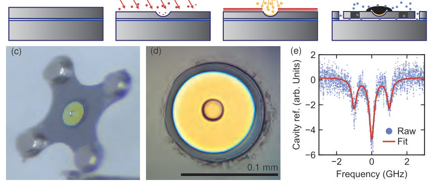
<figcaption class="paper-figure-caption"><b>Fig 1.</b> FIG. 1. Fabrication and characterization of the levitators. (a) Tilted SEM image of a levitator still attached</figcaption>
</figure>
<figure class="paper-figure-card">
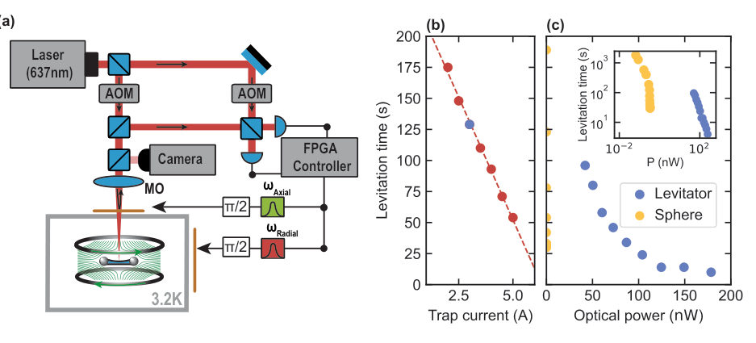
<figcaption class="paper-figure-caption"><b>Fig 2.</b> FIG. 2. Experimental setup magnetically trapping a superconducting levitator. (a) Schematic of the cryo-</figcaption>
</figure>
<figure class="paper-figure-card">
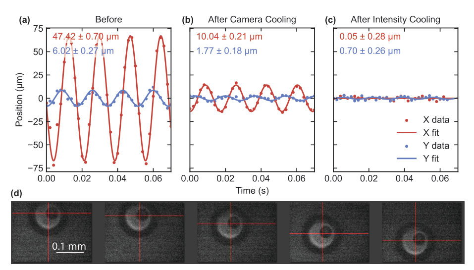
<figcaption class="paper-figure-caption"><b>Fig 3.</b> FIG. 3. The radial motion of the levitator is feedback-cooled in two steps. In the first step, the center of</figcaption>
</figure>
<figure class="paper-figure-card">
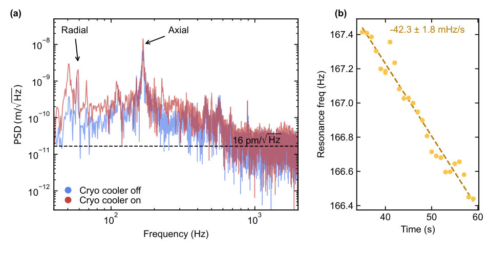
<figcaption class="paper-figure-caption"><b>Fig 4.</b> FIG. 4. We measure the power spectral density (PSD) of the interferometric signal during levitation with</figcaption>
</figure>
</div>

<p><strong>Summary.</strong> This paper presents a method to suspend and control a high-reflectivity micromirror using superconducting magnetic levitation at cryogenic temperatures. By employing active feedback and interferometric readout, the system achieves high sensitivity and stability, overcoming mechanical clamping losses. This establishes a versatile, low-dissipation platform crucial for advanced cavity optomechanics and quantum sensing.</p>
<p><strong>Why it may be interesting.</strong> This work directly bridges mechanical engineering, superconducting physics, and quantum optics, providing a highly controllable, low-loss mechanical element ideal for testing quantum ground states or coupling to quantum systems.</p>
<details>
<summary>Detailed structure</summary>
<p><strong>Main problem.</strong> The primary challenge addressed is the mechanical suspension of high-precision optical elements while minimizing environmental noise and dissipation.</p>
<p><strong>Main result.</strong> The authors successfully demonstrated controlled superconducting magnetic levitation of a high-reflectivity micromirror, achieving high sensitivity and establishing a robust platform for cavity optomechanics.</p>
<p><strong>Method.</strong> The system uses superconducting anti-Helmholtz traps for levitation, combined with active feedback control (camera and intensity-based) to stabilize all three translational degrees of freedom.</p>
<p><strong>Model / system.</strong> The platform involves a microfabricated silicon mirror coated with a dielectric stack, levitated by superconducting microspheres within a magnetic quadrupole field at cryogenic temperatures. The motion is modeled by extending levitated sphere dynamics to a composite object.</p>
<p><strong>Key observables.</strong> Displacement sensitivity ($\sim 0.1 	ext{ nm}/\sqrt{	ext{Hz}}$), axial trap frequency ($\sim 167 	ext{ Hz}$), and cavity finesse ($  ext{F} &gt; 10^4$).</p>
<p><strong>Important parameters / regimes.</strong> Micromirror mass ($ ext{30 } \mu    ext{g}$), cryogenic temperature ($   ext{3.2 K}$), and the superconducting critical field dependence.</p>
<p><strong>Assumptions / limitations.</strong> The measurements are limited by extrinsic heating (leading to quench) and the accuracy of the feedback control schemes.</p>
<p><strong>Figures summary.</strong> Figures illustrate fabrication steps, the experimental setup (cryostat, magnetic trap, interferometer), and the dependence of levitation time on trap current and optical probe power.</p>
<p><strong>Paper structure.</strong> The paper details the fabrication process, the experimental setup for magnetic levitation, the implementation of multi-stage feedback control for motion stabilization, and the characterization of mechanical resonances and cavity performance.</p>
</details>
<details>
<summary>Abstract</summary>
<p>We introduce a method to suspend an optical micromirror, with a total mass of \SI{30}{\micro\gram}, using superconducting magnetic levitation. The micromirror is formed on a silicon membrane, coated with a high-reflectivity dielectric stack and attached to superconducting microspheres. The object is stably levitated inside a magnetic quadrupole field at cryogenic temperatures. Magnetic feedback on the transverse motion is used to stabilize the position of the levitator within the trapping field, allowing to measure the axial displacement of the levitator using optical interferometry. The system reaches a sensitivity of order \SI{100}{\pico\metre/\sqrt{\hertz}} near the axial trap frequency of \SI{167}{Hz}. This approach enables free-standing mirrors with minimal dissipation and tunable oscillation frequencies, offering a platform for precision sensing and quantum cavity optomechanics in the microgram regime.</p>
</details>
<p><sub><a href="#top">↑ back to top</a></sub></p>

<p><a id="paper-2609.17818"></a></p>
<h3 id="entropy-spectroscopy-of-a-tunable-two-site-hubbard-molecule"><a href="http://arxiv.org/abs/2609.17818v1">Entropy spectroscopy of a tunable two-site Hubbard molecule</a></h3>
<p><strong>Authors:</strong> Uhjin Kim, Seokyeong Lee, Gibum Yun, Dongsung T. Park, Soobeom Choi, Sangwoo Jeong, Donghoon Kim, V. Umansky, Yunchul Chung, Hyoungsoon Choi, H. -S. Sim, Hyung Kook Choi<br>
<strong>Type:</strong> experiment · <strong>Category:</strong> statistical mechanics · <strong>PDF:</strong> <a href="https://arxiv.org/pdf/2609.17818v1">https://arxiv.org/pdf/2609.17818v1</a><br>
<strong>Analysis basis:</strong> full PDF text, analyzed in chunks
<strong>Topic relevance:</strong> <code>analog quantum simulation</code> <strong>3/5</strong> · <code>quantum measurements</code> <strong>3/5</strong></p>
<div class="figure-strip-hint">↔ Scroll figures horizontally</div>
<div class="paper-figures-scroll">
<figure class="paper-figure-card">
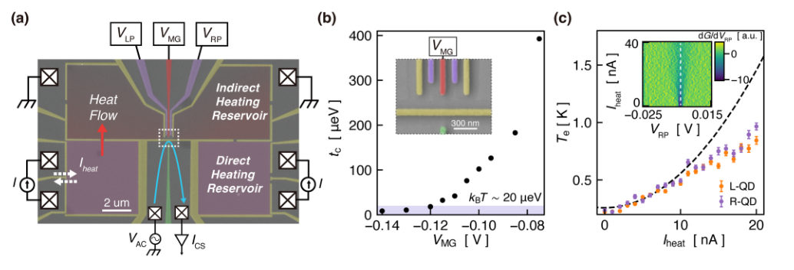
<figcaption class="paper-figure-caption"><b>Fig 1.</b> Figure 1. Device image and calibration. (a) False-colored scanning electron microscope (SEM) image of the device. The device consists of a serial double quantum dot (DQD) coupled to two independent heating reservoirs and a nearby charge sensor (CS) for occupation readout. The conductance of the CS quantum point contact (QPC), 𝐺= 𝐼)*/𝑉+), is measured along the blue solid arrow. Each heating reservoir consists of a direct and an indirect heating chamber. The heating current 𝐼1-23 flows through two QPCs in the direct chamber with opposite polarities (white dashed arrow), and the resulting heat propagates into the indirect chamber (red arrow). The gate voltages 𝑉!# and 𝑉&quot;# control the energy...</figcaption>
</figure>
<figure class="paper-figure-card">
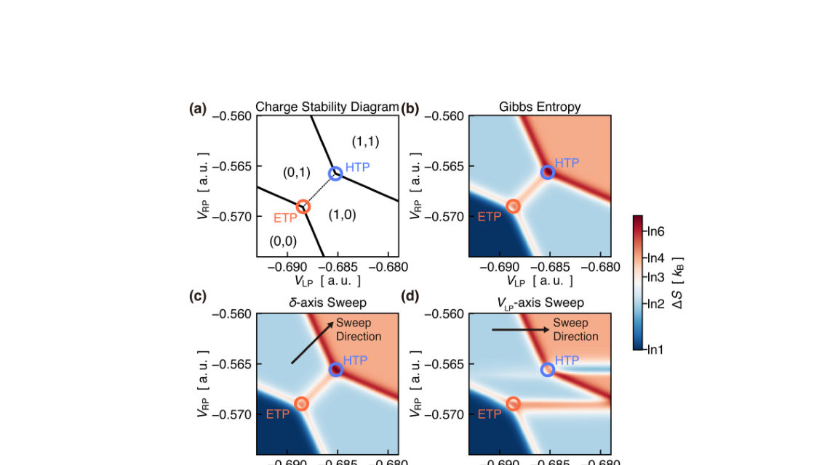
<figcaption class="paper-figure-caption"><b>Fig 2.</b> Figure 2. Charge stability diagram and entropy. (a) Schematic charge stability diagram of the double quantum dot (DQD). The four charge states (𝑁!, 𝑁&quot;) = (0,0), (1,0), (0,1), and (1,1) are shown. The electron triple point (ETP) and hole triple point (HTP) are marked. The solid lines indicate the charge transition boundaries; the dashed line marks the boundary between the (1,0) and (0,1) regions. A trajectory parallel to this dashed line corresponds to the 𝛿-axis, along which 𝜀= 𝜀&quot; −𝜀! is kept constant, where 𝜀! and 𝜀&quot; are the energy levels of the left and right quantum dots (QDs), respectively. (b) Theoretical entropy map calculated from the DQD Hamiltonian using the Gibbs entropy formula....</figcaption>
</figure>
<figure class="paper-figure-card">
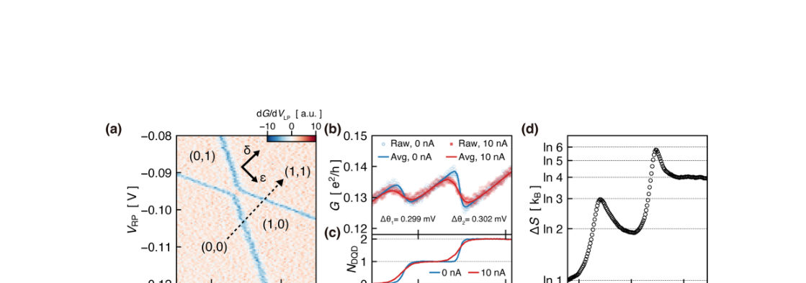
<figcaption class="paper-figure-caption"><b>Fig 3.</b> Figure 3. Measured entropy far away from the triple points. (a) Charge stability diagram of the double quantum dot (DQD) measured by the charge sensor (CS). The 𝜀- and 𝛿-axes are indicated. The black dashed arrow denotes the entropy measurement path traversing the (0,0) → (1,0) → (1,1) charge regions. (b) Conductance measured along the path indicated in (a) for the unheated case (blue circles) and the heated case with an applied current of 10 nA (red squares). The blue and red solid lines represent the averaged conductance. (c) Normalized 𝑁@A@ along the path indicated in (a) for the unheated (blue) and heated (red) cases. (d) Entropy extracted from the 𝑁@A@ data shown in (c) via the Maxwell...</figcaption>
</figure>
<figure class="paper-figure-card">
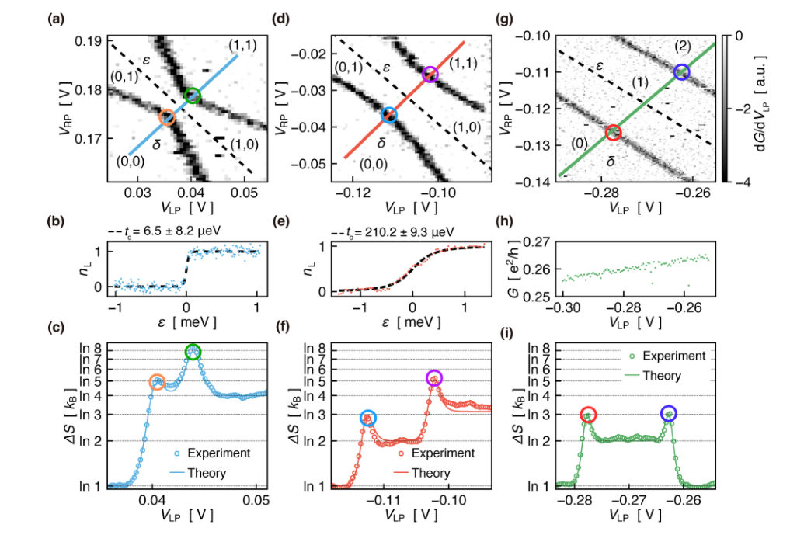
<figcaption class="paper-figure-caption"><b>Fig 4.</b> Figure 4. Measured entropy along the 𝜹-axis with varying interdot tunnel coupling 𝒕𝐜. (a) A DQD charge stability diagram obtained from differentiating the charge sensor (CS) signal in the weak-tunneling regime (𝑡. &lt; 𝑘,𝑇T-). The orange and green circles indicate the electron triple point (ETP) and hole triple point (HTP), respectively. The mean population of the left quantum dot (QD), 𝑛!, is extracted by measuring CS conductance, 𝐺, along the 𝜀-axis (black dashed line), while the entropy is measured along the 𝛿-axis (blue solid line). (b) Extracted mean population of the left QD along the 𝜀-axis in (a). (c) Measured (blue circle markers) and theoretically calculated (blue solid line) entropy...</figcaption>
</figure>
<figure class="paper-figure-card">
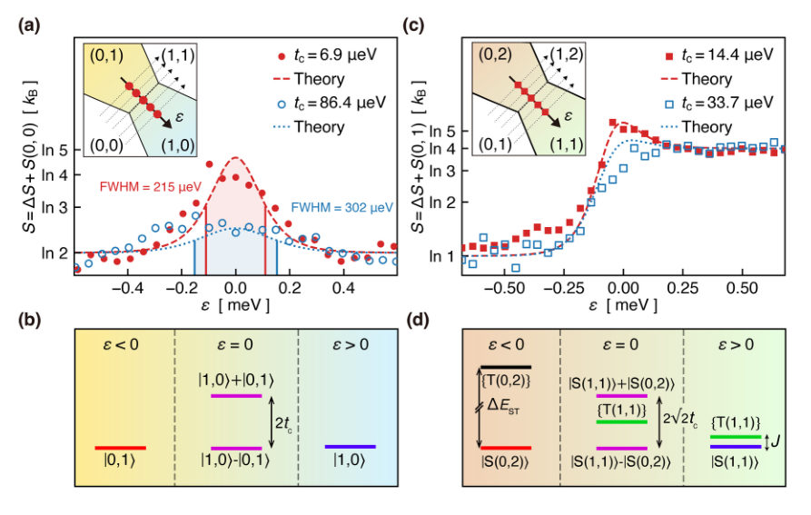
<figcaption class="paper-figure-caption"><b>Fig 5.</b> Figure 5. Entropy evolution across the 𝜺-axis. (a) Entropy as a function of 𝜀, obtained from entropy traces measured parallel to the 𝛿-axis at various 𝜀. The absolute entropy of 𝑁@A@ = 1 region, 𝑆(𝜀) = Δ𝑆(𝜀) + 𝑆(0,0) = Δ𝑆(𝜀), is extracted as the minimum in the 𝑁@A@ = 1 region. The inset shows measurement trajectories from (0,0) to (1,1): the dashed arrows denote each trajectory, and the solid arrow indicates the variable of interest, 𝜀, against which Δ𝑆 is extracted. Red filled circles denote the weak-tunneling regime (𝑡. = 6.9 µeV), and blue open circles denote the intermediate-tunneling regime (𝑡. = 86.4 µeV). The red dashed and the blue dotted lines indicate the theoretically calculated...</figcaption>
</figure>
</div>

<p><strong>Summary.</strong> This paper reports on an entropy spectroscopy technique applied to a double quantum dot acting as a tunable Hubbard molecule. By measuring the total entropy, the researchers quantitatively track how the thermal population of quantum states changes as interdot tunneling increases. This method successfully distinguishes the contributions of different molecular eigenstates, providing deep insight into the interplay between quantum coherence and thermal fluctuations.</p>
<p><strong>Why it may be interesting.</strong> This work provides a direct, measurable thermodynamic probe (entropy) to characterize the competition between quantum tunneling and interactions in a minimal many-body system, offering insights into the nature of quantum phase transitions.</p>
<details>
<summary>Detailed structure</summary>
<p><strong>Main problem.</strong> The central question is determining which microscopic states remain thermally active when tunneling and interactions compete in Hubbard physics.</p>
<p><strong>Main result.</strong> Entropy spectroscopy reveals that as interdot tunneling increases, the total entropy decreases because the energy splitting suppresses the occupation of higher-energy states.</p>
<p><strong>Method.</strong> The authors developed an entropy measurement protocol for a double quantum dot, utilizing a specific trajectory ($\delta$-axis) to circumvent measurement limitations with a single charge sensor.</p>
<p><strong>Model / system.</strong> The system is a tunable two-site Hubbard molecule realized in a GaAs double quantum dot (DQD). The physics is governed by the competition between interdot tunneling ($t$) and interactions, analyzed via the total entropy ($S$).</p>
<p><strong>Key observables.</strong> Total entropy ($S$), Charge Sensor (CS) conductance ($G$), and the number of thermally accessible states ($\Omega$).</p>
<p><strong>Important parameters / regimes.</strong> Interdot tunnel coupling ($t$), thermal energy ($k_B T$), and the detuning ($\delta$).</p>
<p><strong>Assumptions / limitations.</strong> The protocol assumes the system remains in thermal equilibrium with the reservoirs, and the $\delta$-axis trajectory is used to ensure the Maxwell relation depends only on the total DQD occupation.</p>
<p><strong>Figures summary.</strong> Figures show the tunability of tunnel coupling, the evolution of entropy across different tunneling regimes, and comparisons between entropy extracted via the proposed $\delta$-axis protocol versus other measurement paths.</p>
<p><strong>Paper structure.</strong> The paper first introduces the challenge of measuring DQD entropy, develops the $\delta$-axis measurement protocol based on Maxwell relations, and then presents experimental results showing entropy evolution as a function of interdot tunneling strength, confirming theoretical predictions for state occupation.</p>
</details>
<details>
<summary>Abstract</summary>
<p>Determining which microscopic states remain thermally active when tunneling and interactions compete is a central question in Hubbard physics. Here we develop an entropy measurement protocol for a double quantum dot, extending the charge-based approach established for a single dot, and measure the total entropy of a tunable two-site Hubbard molecule realized in a GaAs double dot. By shifting both dot levels together at fixed detuning, the entropy is correctly probed with only a single charge sensor. As interdot tunneling increases, the system evolves from two atomic-like dots through hybridized molecular states to a merged single dot. Across this evolution, the entropy decreases as tunnel-induced energy splitting exceeds the thermal energy and suppresses the occupation of higher-energy states. The measurements resolve the diminishing contribution of antibonding states and the changing thermal contributions of hybridized singlet and triplet states, in quantitative agreement with a two-site Hubbard model. By distinguishing states with the same charge configuration but different orbital and spin content, entropy reveals how tunneling and interactions determine the thermally active states of the minimal Hubbard system.</p>
</details>
<p><sub><a href="#top">↑ back to top</a></sub></p>

<p><a id="paper-2609.18246"></a></p>
<h3 id="new-directions-in-dynamical-expectation-estimation"><a href="http://arxiv.org/abs/2609.18246v1">New directions in dynamical expectation estimation</a></h3>
<p><strong>Authors:</strong> Panjin Kim, Kyung Chul Jeong, Yun-Tak Oh<br>
<strong>Type:</strong> theory · <strong>Category:</strong> numerical methods · <strong>PDF:</strong> <a href="https://arxiv.org/pdf/2609.18246v1">https://arxiv.org/pdf/2609.18246v1</a><br>
<strong>Analysis basis:</strong> full PDF text, analyzed in chunks
<strong>Topic relevance:</strong> <code>methods for driven-dissipative</code> <strong>3/5</strong> · <code>Keldysh / 2PI / non-Gaussian methods</code> <strong>2/5</strong> · <code>quantum measurements</code> <strong>1/5</strong></p>
<div class="figure-strip-hint">↔ Scroll figures horizontally</div>
<div class="paper-figures-scroll">
<figure class="paper-figure-card">
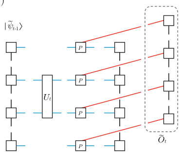
<figcaption class="paper-figure-caption"><b>Fig 1.</b> Fig. 2. (a) Tensor network representation of one step of the forward time sweep with the blue bonds denoting the qubit indices. The yellow tensors represent the updated approximation to the evolved state up to canonicalization. The 7→symbol between the networks denotes an update, which should not be interpreted as conventional state compression. State compression is considered only as the µ-term in Eq. (1). (b) Tensor network representation of the target expectation value before the update, with P denoting the local Pauli basis tensor and the red bonds denoting the Pauli indices. The optimization of the updated state | ˜ψt⟩accounts for deviations from this target contraction through the...</figcaption>
</figure>
<figure class="paper-figure-card">
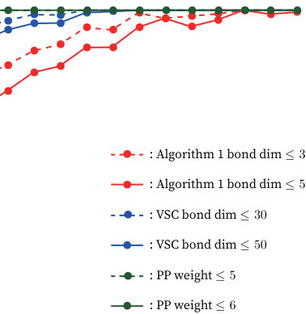
<figcaption class="paper-figure-caption"><b>Fig 2.</b> Fig. 3. Relative errors of the three approximation methods, each averaged over the same 500 BP circuit instances with n = 30 qubits. For Algorithm 1, the maximum bond dimension of the backward observable is set equal to that of the forward MPS.</figcaption>
</figure>
</div>

<p><strong>Summary.</strong> This paper proposes a novel 'sweep algorithm' to accurately estimate dynamical expectation values in quantum circuits by jointly optimizing approximations for both the quantum state and the observable. By deriving an analytical error decomposition, the method shows significant error reduction compared to existing techniques, making it a powerful tool for simulating quantum dynamics.</p>
<p><strong>Why it may be interesting.</strong> This work provides a rigorous, numerically superior framework for calculating time-dependent expectation values, which is crucial for simulating quantum dynamics in complex systems where simple state or observable approximations fail.</p>
<details>
<summary>Detailed structure</summary>
<p><strong>Main problem.</strong> Dynamically estimating expectation values in quantum systems is challenging because conventional approximation methods optimize the state or observable separately, failing to account for the combined error in the final expectation value.</p>
<p><strong>Main result.</strong> The proposed joint state and observable approximation algorithm achieves errors two to three orders of magnitude smaller than variational state compression on 30-qubit random circuits.</p>
<p><strong>Method.</strong> The authors introduce a 'sweep algorithm' utilizing coupled loss functions that jointly guide the approximation of the quantum state and the observable, derived from an analytical error decomposition.</p>
<p><strong>Model / system.</strong> The work analyzes quantum systems undergoing dynamics, modeled by quantum circuits applied to an initial state, aiming to approximate $ ext{Tr}(
ho_0 C^\dagger O C)$.</p>
<p><strong>Key observables.</strong> The expectation value $\langle 	ilde{O} 
angle$, and error components $R^{(i)}_1$ and $R^{(i)}_2$ derived from error decomposition.</p>
<p><strong>Important parameters / regimes.</strong> Bond dimensions ($\chi_
ho, \chi_O$), circuit depth ($L$), and the coupling parameters ($\gamma, \mu$) in the loss functions.</p>
<p><strong>Assumptions / limitations.</strong> The optimal form of the joint guidance loss functions is heuristic, and the derived updates generally do not preserve unitarity.</p>
<p><strong>Figures summary.</strong> Figure 1 compares error components ($|R^{(i)}_1|$ and $|R^{(i)}_2|$) across barren plateau circuits, showing suppression of one error component relative to another. Figure 3 demonstrates the superior performance of the proposed algorithm versus other methods for 30-qubit circuits.</p>
<p><strong>Paper structure.</strong> The paper first identifies the error combination problem, develops the joint loss-guided sweep algorithm, provides an analytical error decomposition ($E^{-b}(i) = R(i)_1 + R(i)_2$), and validates the method using numerical tests on large random circuits.</p>
</details>
<details>
<summary>Abstract</summary>
<p>Computing dynamical expectation values typically relies on approximations optimized for the state or observable separately, without accounting for how their errors combine in the final expression.This work explores an alternative approach in which each approximation is guided by both the state and the observable, accounting for how they jointly determine the target expectation value. This idea is implemented through a sweep algorithm with coupled loss functions for forward state and backward observable updates. Exact error relations provide an analytical rationale for how the proposed losses can improve the accuracy. Numerical tests on 30-qubit random circuits show errors two to three orders of magnitude smaller than those of variational state compression at equal bond dimensions. These results motivate further exploration of joint state and observable approximation for dynamical expectation value estimation.</p>
</details>
<p><sub><a href="#top">↑ back to top</a></sub></p>

<p><a id="paper-2609.18386"></a></p>
<h3 id="geometry-driven-suppression-of-fermionic-pairing-on-a-spherical-surface"><a href="http://arxiv.org/abs/2609.18386v1">Geometry-Driven Suppression of Fermionic Pairing on a Spherical Surface</a></h3>
<p><strong>Authors:</strong> Lorenzo Frigato, Andrea Tononi, Luca Salasnich<br>
<strong>Type:</strong> theory · <strong>Category:</strong> quantum gases · <strong>PDF:</strong> <a href="https://arxiv.org/pdf/2609.18386v1">https://arxiv.org/pdf/2609.18386v1</a><br>
<strong>Analysis basis:</strong> full PDF text, analyzed in chunks
<strong>Topic relevance:</strong> <code>analog quantum simulation</code> <strong>3/5</strong> · <code>Keldysh / 2PI / non-Gaussian methods</code> <strong>2/5</strong></p>
<div class="figure-strip-hint">↔ Scroll figures horizontally</div>
<div class="paper-figures-scroll">
<figure class="paper-figure-card">
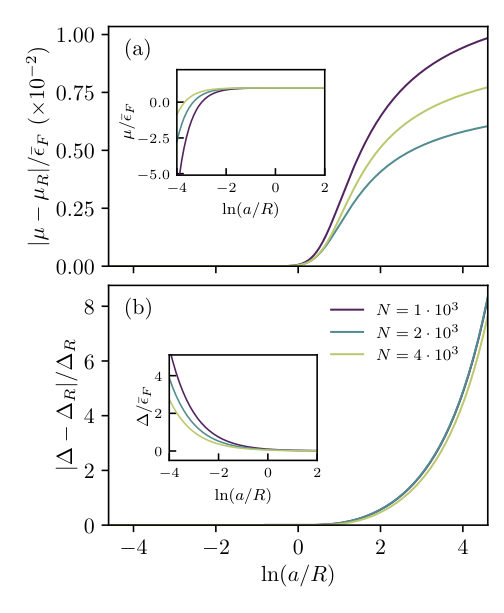
<figcaption class="paper-figure-caption"><b>Fig 1.</b> FIG. 1. Differences between the exact and low-curvature asymptotic values of: (a) the chemical potential, and (b) the gap, displayed versus the crossover parameter ln(a/R). The exact values of µ and ∆are obtained by solving Eqs. (3) and (6), the asymptotic values of µR and ∆R = ¯∆are given by Eq. (8), and the flat-space Fermi energy reads ¯ϵF = ℏ2πn/m. The observed convergence signifies that cur- vature provides quantitative corrections when fermions pair into tightly-bound dimers of size ∼a ≪R and, conversely, that beyond ln(a/R) = 0 the system geometry strongly alters the flat-space results. The insets display the values of the ex- act µ and ∆versus ln(a/R), and we choose here non-magic...</figcaption>
</figure>
<figure class="paper-figure-card">
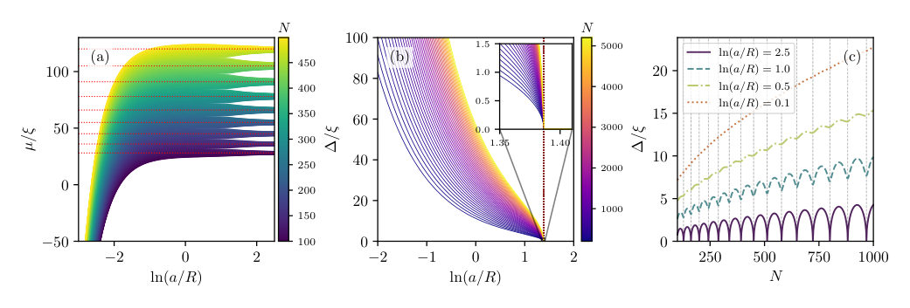
<figcaption class="paper-figure-caption"><b>Fig 2.</b> FIG. 2. Geometry-dependent shell effects in the BCS-BEC crossover on the surface of a sphere. (a) The chemical potential µ/ξ versus ln(a/R) (excluding Nmagic values), with ξ = ℏ2/(mR2), shows the separation into bands and the convergence towards the closed-shell values when increasing ln(a/R) towards the weakly attractive BCS regime. (b) The pairing gap ∆/ξ versus the interaction strength ln(a/R) for closed shells (N = Nmagic) displays a suppression below the interaction strength marked by the red dotted line. The inset shows a zoom of the collapse region, which displays virtually no dependence on N. (c) Pairing oscillations of ∆are localized near Nmagic values (dashed vertical lines), and...</figcaption>
</figure>
</div>

<p><strong>Summary.</strong> This paper theoretically examines fermionic pairing in an attractive Fermi gas confined to a spherical surface. It demonstrates that the spherical geometry fundamentally alters the pairing physics, causing pronounced shell effects that suppress superfluidity at weak interactions. The findings highlight geometry as a powerful control knob for quantum matter in ultracold atomic experiments.</p>
<p><strong>Why it may be interesting.</strong> This work provides a concrete theoretical framework for understanding how geometric confinement (curvature) acts as a tunable parameter to control fundamental quantum phases like superfluidity in ultracold atomic systems.</p>
<details>
<summary>Detailed structure</summary>
<p><strong>Main problem.</strong> The study investigates how confining a two-component attractive Fermi gas to a spherical surface modifies its ground-state pairing properties compared to the idealized planar limit.</p>
<p><strong>Main result.</strong> The geometry introduces strong shell effects, causing the fermionic pairing to be significantly suppressed at weak interactions for specific 'magic' particle numbers, especially in the BCS regime.</p>
<p><strong>Method.</strong> The analysis uses functional integration and self-consistent solutions to derive curvature-corrected equations for the pairing gap and chemical potential, utilizing spherical harmonic expansions.</p>
<p><strong>Model / system.</strong> The system is a two-component attractive Fermi gas confined to a sphere of radius R. The physics is analyzed across the BCS-BEC crossover, governed by the interaction strength relative to the sphere's curvature.</p>
<p><strong>Key observables.</strong> Pairing gap ($\Delta$), chemical potential ($\mu$), and the characteristic shell gap ($\delta_F$).</p>
<p><strong>Important parameters / regimes.</strong> The ratio of scattering length to radius ($a/R$), which dictates the crossover regime, and the particle number $N$ relative to magic numbers.</p>
<p><strong>Assumptions / limitations.</strong> The analysis relies on systematic expansions in $1/R$ and uses mean-field theory for the pairing gap, though it rigorously handles the discrete spectrum effects.</p>
<p><strong>Figures summary.</strong> Figures illustrate the quantitative convergence of results towards planar limits in the BEC regime and show the distinct, step-like suppression of the pairing gap for closed shells in the BCS regime.</p>
<p><strong>Paper structure.</strong> The paper systematically derives the grand canonical potential using functional integration, derives curvature-corrected equations for $\mu$ and $\Delta$ via the Euler-Maclaurin formula, and then analyzes the resulting BCS-BEC crossover, highlighting shell effects.</p>
</details>
<details>
<summary>Abstract</summary>
<p>We investigate the ground-state properties of a two-component attractive Fermi gas confined to a spherical surface, demonstrating how curvature and finite-size effects lead to qualitatively different behavior compared to the planar limit. In the strongly attractive regime, the system forms a Bose-Einstein condensate (BEC) of tightly bound dimers, yielding a gap and chemical potential that approach flat-space results with leading-order geometric corrections. However, as the attraction decreases, the system crosses over into a Bardeen-Cooper-Schrieffer (BCS) regime where the Cooper pair size becomes constrained by the sphere radius, producing pronounced deviations from flat-space behavior. We identify strong shell effects at magic particle numbers set by the single-particle spectrum, revealing the geometry-driven suppression of fermionic pairing at weak interactions. Our results highlight a fundamental interplay among geometry, quantum statistics, and interactions, motivating future experiments with shell-trapped ultracold fermions and inspiring geometry-controlled condensed matter devices.</p>
</details>
<p><sub><a href="#top">↑ back to top</a></sub></p>

<p><a id="paper-2609.18907"></a></p>
<h3 id="logarithmic-depth-quantum-simulation-of-boson-sampling"><a href="http://arxiv.org/abs/2609.18907v1">Logarithmic-depth quantum simulation of boson sampling</a></h3>
<p><strong>Authors:</strong> Changhun Oh<br>
<strong>Type:</strong> theory · <strong>Category:</strong> quantum information and computing · <strong>PDF:</strong> <a href="https://arxiv.org/pdf/2609.18907v1">https://arxiv.org/pdf/2609.18907v1</a><br>
<strong>Analysis basis:</strong> full PDF text, analyzed in chunks
<strong>Topic relevance:</strong> <code>interference shaping light</code> <strong>3/5</strong> · <code>Full counting statistics</code> <strong>1/5</strong> · <code>analog quantum simulation</code> <strong>1/5</strong></p>
<div class="figure-strip-hint">↔ Scroll figures horizontally</div>
<div class="paper-figures-scroll">
<figure class="paper-figure-card">
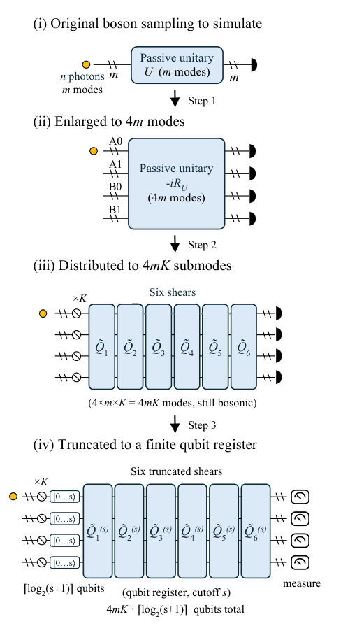
<figcaption class="paper-figure-caption"><b>Fig 1.</b> Figure 1. Construction of the boson-sampling simulator. (i) The original m-mode problem with n single-photon inputs. (ii) Enlargement to 4m modes, with the fixed input encoder implicit before −iRU. (iii) Distribution over K submodes per mode and the six corresponding shears. (iv) Local truncation to occupations 0, . . . , s and qubit implementation. Summing the measured occupations over the submodes of each output pair gives the simulated sample. The displayed qubit count includes only the submode registers; input and auxiliary reg- isters are omitted.</figcaption>
</figure>
</div>

<p><strong>Summary.</strong> This paper demonstrates that the complex process of boson sampling can be simulated using a quantum circuit with only logarithmic depth. The authors achieve this by mathematically decomposing the optical transformation into simpler 'shears' and then mapping these shears onto a qubit circuit using Clifford+T gates. This result places boson sampling within the class of shallow quantum computation.</p>
<p><strong>Why it may be interesting.</strong> This work provides a concrete, resource-bounded quantum circuit implementation for a canonical problem in quantum optics, placing it firmly within the realm of shallow quantum computation.</p>
<details>
<summary>Detailed structure</summary>
<p><strong>Main problem.</strong> To determine the quantum resources, specifically the circuit depth, required to simulate the output distribution of boson sampling.</p>
<p><strong>Main result.</strong> The boson sampling distribution can be simulated by a Clifford+T circuit with a depth of $O(\log(m/\epsilon))$ and polynomial width.</p>
<p><strong>Method.</strong> The technique involves enlarging the optical system to decompose the transformation into six quadratic shears, redistributing modes over submodes, and finally mapping the structure to a qubit circuit using Clifford+T gates.</p>
<p><strong>Model / system.</strong> The model is boson sampling, realized by a passive interferometer $U$ acting on $m$ optical modes with $n$ input photons. The simulation is mapped onto a qubit circuit.</p>
<p><strong>Key observables.</strong> The Total Variation (TV) error $\lVert eP_U - P_U 
Vert_{TV} \le \epsilon$, and the final output photon count distribution.</p>
<p><strong>Important parameters / regimes.</strong> The number of modes ($m$), the number of input photons ($n$), the desired accuracy ($\epsilon$), and the local occupation cutoff ($s$).</p>
<p><strong>Assumptions / limitations.</strong> The simulation relies on truncating local quadratures at a fixed cutoff $s$ and distributing modes over $K$ submodes, introducing controlled approximation errors.</p>
<p><strong>Figures summary.</strong> Figure 1 illustrates the entire construction pipeline: from the original $m$-mode problem to enlargement to $4m$ modes, distribution over $K$ submodes, and final local truncation/qubit mapping.</p>
<p><strong>Paper structure.</strong> The paper proceeds by first enlarging the interferometer to decompose it into six quadratic shears. Next, it details the mode redistribution over submodes to enable a constant local cutoff. Finally, it maps this structure to a qubit circuit using Clifford+T gates, providing complexity bounds for each step.</p>
</details>
<details>
<summary>Abstract</summary>
<p>We show that boson sampling with an arbitrary $m$-mode interferometer and $n\le m$ single-photon inputs can be simulated to inverse-polynomial total-variation error by a logarithmic-depth qubit circuit with polynomially many qubits. The circuit uses Clifford+$T$ gates, arbitrary qubit connectivity, and a single final measurement, and its family is logspace uniform. The key idea is to enlarge the optical system, decompose the resulting transformation into six quadratic shears, and distribute each mode over many submodes. This redistribution permits a fixed local occupation cutoff, after which local basis changes and parallel phase gates give the qubit circuit. Consequently, our result places boson sampling within shallow quantum computation.</p>
</details>
<p><sub><a href="#top">↑ back to top</a></sub></p>

<p><a id="paper-2609.18327"></a></p>
<h3 id="quantum-electrodynamics-of-equilibrium-systems-a-rigorous-maxwell-regularized-functional-theoretic-formulation"><a href="http://arxiv.org/abs/2609.18327v1">Quantum electrodynamics of equilibrium systems: A rigorous Maxwell-regularized functional-theoretic formulation</a></h3>
<p><strong>Authors:</strong> Markus Penz, Christian Jöns, Michael Ruggenthaler, Angel Rubio<br>
<strong>Type:</strong> theory · <strong>Category:</strong> other · <strong>PDF:</strong> <a href="https://arxiv.org/pdf/2609.18327v1">https://arxiv.org/pdf/2609.18327v1</a><br>
<strong>Analysis basis:</strong> full PDF text, analyzed in chunks
<strong>Topic relevance:</strong> <code>Keldysh / 2PI / non-Gaussian methods</code> <strong>3/5</strong> · <code>quantum measurements</code> <strong>2/5</strong></p>
<div class="figure-strip-hint">↔ Scroll figures horizontally</div>
<div class="paper-figures-scroll">
<figure class="paper-figure-card">
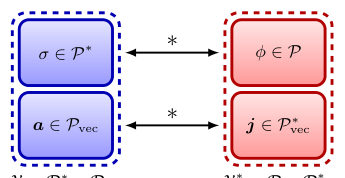
<figcaption class="paper-figure-caption"><b>Fig 1.</b> Figure 1. Schematics for the principal Hilbert spaces X for densi- ties and vector potentials as the internal quantities (later evaluated as expectation values on the quantum system) and its dual X ∗for the external sources, linked through Maxwell duality.</figcaption>
</figure>
<figure class="paper-figure-card">
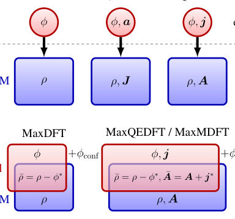
<figcaption class="paper-figure-caption"><b>Fig 2.</b> Figure 2. Comparison of standard functional theories, where external source quantities serve as a parametrization of the ground-state, with their Maxwell-regularized counterparts, where the sources receive a physical description and are combined with the internal quantities to form the mixed ones. Note that current DFT (CDFT) has no direct coun- terpart, but MaxMDFT is instead derived in Sec. IX as an alternative theory for including magnetic fields.</figcaption>
</figure>
<figure class="paper-figure-card">
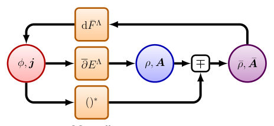
<figcaption class="paper-figure-caption"><b>Fig 3.</b> Figure 3. The structure of MaxQEDFT as an invertible input–output scheme with the formulation in terms of (ϕ, j) that enters the Pauli– Fierz Hamiltonian and the (ρ, A) from expectation values of a ground-state solution. The result are the mixed quantities (ρ, A) from Eq. (53) as a combination of internal and external quantities.</figcaption>
</figure>
<figure class="paper-figure-card">
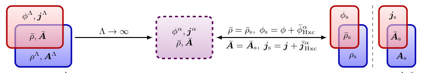
<figcaption class="paper-figure-caption"><b>Fig 4.</b> Figure 5. Schematic for the removal of the cutoff on the external quantities and their further connection to a quantum system with the same mixed density ρs = ρ from an effective potential ϕs, as well as a decoupled mixed vector potential As = A from an external current js.</figcaption>
</figure>
<figure class="paper-figure-card">
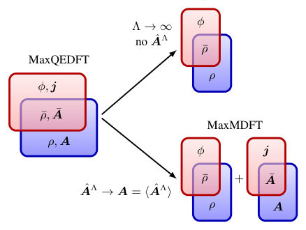
<figcaption class="paper-figure-caption"><b>Fig 5.</b> Figure 6. The two discussed boundary cases that arise from entirely removing the field operator ˆ AΛ from the description and from a mean- field approximation. While MaxDFT is a fully regularized form of DFT,</figcaption>
</figure>
</div>

<p><strong>Summary.</strong> This paper introduces a novel, rigorous functional-theoretic framework for Quantum Electrodynamics in equilibrium systems, termed MaxQEDFT. It achieves this by grounding the theory in the Maxwell equations and coupling them directly to the structure of Density-Functional Theory. The resulting formulation is fully regularized, allowing for a non-perturbative description of light-matter interactions that correctly reproduces macroscopic electrodynamics.</p>
<p><strong>Why it may be interesting.</strong> This work is highly relevant as it rigorously merges the mathematical formalism of DFT with the fundamental field theory of electromagnetism (QED), providing a necessary theoretical tool for describing strongly coupled light-matter systems beyond standard approximations.</p>
<details>
<summary>Detailed structure</summary>
<p><strong>Main problem.</strong> The paper develops a rigorous functional-theoretic framework for Quantum Electrodynamics (QED) applied to equilibrium systems, aiming to overcome representability issues in standard Density-Functional Theory (DFT). It seeks to provide a fully regularized description of light-matter interactions.</p>
<p><strong>Main result.</strong> A Maxwell-regularized functional theory (MaxQEDFT) is proposed that successfully incorporates external sources and energy, allowing for a non-perturbative description where the ultraviolet cutoff can be removed.</p>
<p><strong>Method.</strong> The approach reformulates QED by founding the theory on the Maxwell equations and linking them to DFT structure. It employs a Kohn-Sham-like construction within a functional analysis framework defined over coupled potential and field spaces.</p>
<p><strong>Model / system.</strong> The system involves light-matter interactions in equilibrium, modeled by coupling the quantum system's internal observables (density, current) to an external classical environment governed by Maxwell's equations. Harmonic confinement is used mathematically to establish a reference state.</p>
<p><strong>Key observables.</strong> Charge density ($\sigma$), current ($\mathbf{j}$), electrostatic potential ($\phi$), and vector potential ($\mathbf{a}$); the electromagnetic field energy.</p>
<p><strong>Important parameters / regimes.</strong> Plasma frequency ($\omega_p$), confinement strength ($\gamma$), and the coupling constants ($\epsilon_0, \mu_0$).</p>
<p><strong>Assumptions / limitations.</strong> The theory assumes the system can be modeled by coupling to a classical environment governed by Maxwell's equations, and it utilizes harmonic confinement for mathematical tractability.</p>
<p><strong>Paper structure.</strong> The structure moves from identifying the foundational problem (QED in equilibrium) to establishing the mathematical framework using Hilbert spaces and duality mappings derived from Maxwell's equations. It then details the construction of the regularized functional theory, culminating in the physical interpretation that reproduces macroscopic Maxwell equations.</p>
</details>
<details>
<summary>Abstract</summary>
<p>A framework for quantum electrodynamics of equilibrium systems is proposed that takes the Maxwell equations as foundational and links them to the structure of density-functional theory for the quantum system. By switching from purely internal observables like the one-particle density to combined internal and external quantities, the external sources and their energy are taken into account. A fully regularized functional theory emerges that avoids the usual representability problems. With the Kohn-Sham construction that links to an auxiliary uncoupled system, the ultra-violet cutoff can be removed and one arrives at a fully renormalized and non-perturbative light-matter description. Regularized forms of density-functional theory with and without magnetic fields appear as boundary cases, while the emergent physical picture reproduces the macroscopic Maxwell equations.</p>
</details>
<p><sub><a href="#top">↑ back to top</a></sub></p>

<p><a id="paper-2609.17896"></a></p>
<h3 id="qemscore-how-much-does-the-measurement-add-to-learned-quantum-error-mitigation"><a href="http://arxiv.org/abs/2609.17896v1">QEMScore: How Much Does the Measurement Add to Learned Quantum Error Mitigation?</a></h3>
<p><strong>Authors:</strong> Yue Zhao, Huayue Gu, Yushun Dong, Xiyang Hu<br>
<strong>Type:</strong> theory · <strong>Category:</strong> quantum information and computing · <strong>PDF:</strong> <a href="https://arxiv.org/pdf/2609.17896v1">https://arxiv.org/pdf/2609.17896v1</a><br>
<strong>Analysis basis:</strong> full PDF text, analyzed in chunks
<strong>Topic relevance:</strong> <code>quantum measurements</code> <strong>3/5</strong> · <code>analog quantum simulation</code> <strong>1/5</strong></p>
<div class="figure-strip-hint">↔ Scroll figures horizontally</div>
<div class="paper-figures-scroll">
<figure class="paper-figure-card">
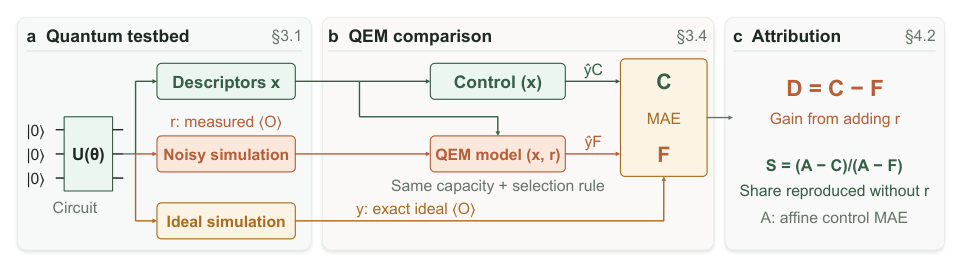
<figcaption class="paper-figure-caption"><b>Fig 1.</b> Figure 1: One circuit, one exact target, one input withheld: the two models differ only in whether they read the measurement. (a) A circuit and observable O yield descriptors x, a noisy estimate r, and the exact ideal expectation y from noiseless simulation. (b) The learned QEM model reads (x, r); a capacity-matched control reads x alone. Both are fitted from the same candidate family under the same selection rule and scored against y by held-out macro mean absolute error, F and C; the diagram shows evaluation after fitting. (c) The measurement-associated gap is D = C −F. Against the affine feature-only control with error A, the share reproduced without measurement is S = (A −C)/(A −F); a...</figcaption>
</figure>
<figure class="paper-figure-card">
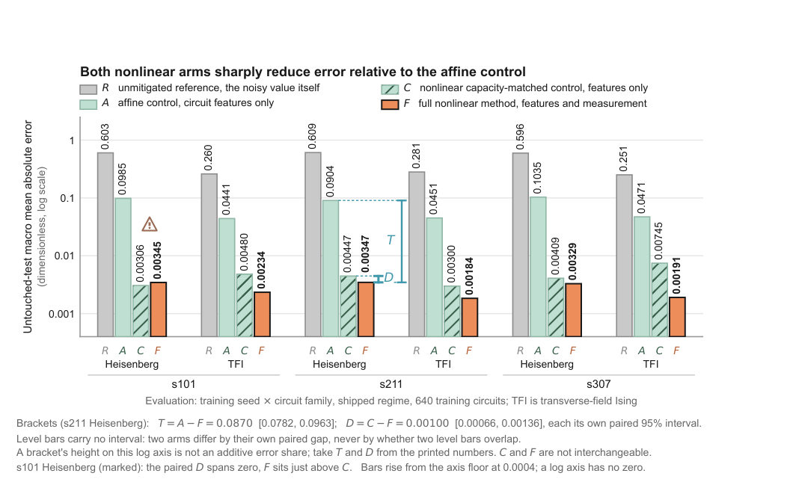
<figcaption class="paper-figure-caption"><b>Fig 2.</b> Figure 2: Both nonlinear arms sharply reduce error relative to the affine control on all six primary evaluations. Each bar is a macro mean absolute error against the exact label on untouched test rows, equally weighted over four strength-by-observable cells, on a logarithmic axis. R: unmitigated noisy reference. A: affine feature-only control. C: capacity-matched feature-only control, fitted from the ablation’s own candidate family. F: the full nonlinear method, this campaign’s restricted-feature ablation (features and measurement). Both feature-only arms read no measurement. Bars are point estimates with no interval; two arms differ by their paired gap, not by whether bars overlap....</figcaption>
</figure>
<figure class="paper-figure-card">
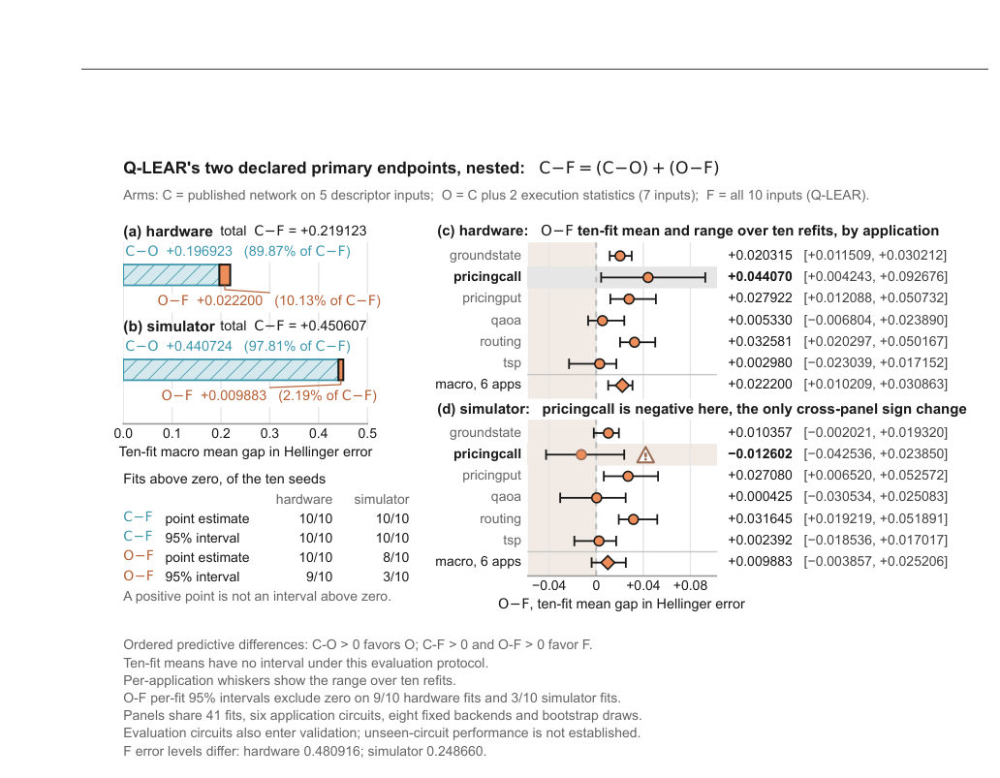
<figcaption class="paper-figure-caption"><b>Fig 3.</b> Figure 4: The base-statistics step carries 89.87 percent of the total gap on hardware and 97.81 percent on the simulator. Endpoints are nested: C−F = (C−O) + (O−F). C: nonlinear descriptor control (five inputs). O: adds base execution statistics (seven inputs). F: full ten-input released method. Positive gap means the fuller set has lower error. (a, b) Ten-fit macro mean C−F split into its two additive pieces, hardware and simulator. (c, d) O−F ten-fit mean per application and macro row; whiskers show the range over ten refits, not a confidence interval. The lower-left block counts fits with positive point estimates and fits whose 95 percent intervals lie wholly above zero. Both panels...</figcaption>
</figure>
<figure class="paper-figure-card">
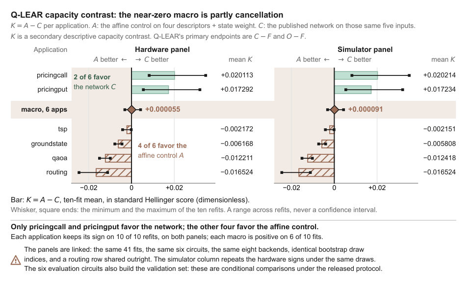
<figcaption class="paper-figure-caption"><b>Fig 4.</b> Figure 5: The near-zero macro mean (+0.000055 hardware, +0.000091 simulator) is partly cancel- lation: two pricing applications favor the network and the other four favor the affine control on all ten refits of both panels. K=A−C per application. A: affine control on four circuit descriptors and the state weight. C: published network on the same five inputs; the two arms differ only in learner capacity. Positive K means the network has lower error. Bars: ten-fit means in Hellinger score. Whiskers with square ends: minimum and maximum over ten refits, a range and not a confidence interval. Per-application rows carry no interval because one application leaves no resample unit. K is a...</figcaption>
</figure>
<figure class="paper-figure-card">
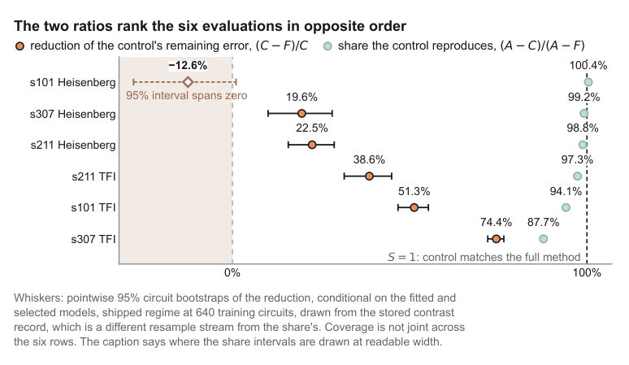
<figcaption class="paper-figure-caption"><b>Fig 5.</b> Figure 6: Sorted by the share it reproduces, the six primary evaluations come out in increasing order of remaining-error reduction. Rows run by share, descending, which is not the fixed evaluation order of Figure 3; each row names its seed and family. The share S = (A −C)/(A −F) divides the part the capacity-matched control reproduces by the ablation’s improvement over the affine control. The remaining- error reduction D/C = (C −F)/C divides the gap D = C −F by the control’s own error. Numerator and denominator both differ, so the second does not follow from the first. Whiskers are pointwise 95 percent circuit-bootstrap intervals of the reduction, conditional on the fitted and selected...</figcaption>
</figure>
</div>

<p><strong>Summary.</strong> This paper introduces QEMScore, a diagnostic framework to quantify the specific contribution of noisy measurement outcomes to the performance of learned quantum error mitigation techniques. By comparing full models against controls that ignore measurement data, the authors show that while measurement matters, the mitigation gain can stem from other sources, necessitating more nuanced reporting standards in the field.</p>
<p><strong>Why it may be interesting.</strong> It provides rigorous diagnostic tools for assessing the true physical utility of complex machine learning models applied to quantum computation, helping researchers distinguish between genuine physical insight and mere correlation with measurement noise.</p>
<details>
<summary>Detailed structure</summary>
<p><strong>Main problem.</strong> The paper addresses the fundamental question of how much of the performance gain in learned quantum error mitigation (QEM) techniques is attributable to the noisy measurement input versus the circuit structure itself.</p>
<p><strong>Main result.</strong> The measurement-only control can account for a significant portion of the mitigator's gain under controlled conditions, and on actual hardware data, measurement inputs do carry predictive gains.</p>
<p><strong>Method.</strong> A novel framework, QEMScore, is introduced to compare learned mitigators against capacity-matched controls that are explicitly prevented from reading the measurement outcome, allowing for the quantification of the measurement's contribution.</p>
<p><strong>Model / system.</strong> The study uses simulated quantum circuits, including spin-chain families (e.g., transverse-field Ising), and evaluates observables $\langle O 
angle$ under various noise models and measurement protocols.</p>
<p><strong>Key observables.</strong> Error reduction quantified by the measurement-associated gap ($D = C - F$), and the share ($S$) of error reduction attributed to the measurement input.</p>
<p><strong>Important parameters / regimes.</strong> The analysis is highly dependent on the specific simulated circuit regimes, the noise configuration, and the computational budget used for the learned models.</p>
<p><strong>Assumptions / limitations.</strong> The conclusions are strictly conditional on the tested simulator regimes and the specific comparison controls implemented; the measurement contribution is not always the sole source of mitigation gain.</p>
<p><strong>Figures summary.</strong> Figure 1 illustrates the comparison framework, showing how the full model's performance is decomposed into components related to circuit features and measurement readings. Other figures detail the comparison across various evaluation settings (S0-S6).</p>
<p><strong>Paper structure.</strong> The paper establishes the scientific problem by noting the ambiguity in current error mitigation reporting. It then introduces the QEMScore framework, details controlled simulations on spin-chain families, presents quantitative results comparing different control models, and concludes with guidelines for reporting learned mitigator accuracy.</p>
</details>
<details>
<summary>Abstract</summary>
<p>How much does the noisy measurement add to learned quantum error mitigation? An accuracy table cannot say, because a model handed circuit structure can score well without reading the measurement at all. QEMScore adds the comparison that can. Each simulated circuit carries an exact ideal answer. The learned mitigator is scored beside a capacity-matched control, a model just as flexible that reads the same circuit description but never the measurement. Each method's measurement spend is accounted and not equalized. We run a controlled campaign on simulated circuits and reanalyze two published learned mitigators, Q-LEAR and QRAFT, from their released hardware data. Three findings stand out. First, under familiar within-family conditions (S0) evaluated across two spin-chain families and three seeds, continuous couplings identify the target, and the control that never reads the measurement matches 87.7 to 100.5 percent of the mitigator's gain over an affine fit to the circuit description. A plain polynomial in the coupling parameters, fitted after the campaign, beats the mitigator on all six evaluations, reflecting the selected learners' capacity. Second, for these selected learners, matching most of the gain is not matching the accuracy: on five of six evaluations the mitigator removes 19.5 to 74.5 percent of the error the capacity-matched control leaves, a learner-specific gap rather than a measurement requirement. Third, on released hardware data where descriptors only partially identify queries, the findings differ: flexible models of the descriptors show negligible mean gain over affine fits in Q-LEAR, and measurement inputs carry predictive gains in both Q-LEAR and QRAFT. These comparisons reflect representation- and protocol-specific behavior rather than an isolated cross-regime difference. A learned mitigator's accuracy should therefore be reported beside such controls.</p>
</details>
<p><sub><a href="#top">↑ back to top</a></sub></p>

<p><a id="paper-2609.18887"></a></p>
<h3 id="zero-bias-field-selective-transition-adressing-of-the-nv-center-via-pulse-shaping"><a href="http://arxiv.org/abs/2609.18887v1">Zero bias field selective transition adressing of the NV center via pulse shaping</a></h3>
<p><strong>Authors:</strong> Thomas Richard, Yves Bérubé-Lauzière<br>
<strong>Type:</strong> theory · <strong>Category:</strong> other · <strong>PDF:</strong> <a href="https://arxiv.org/pdf/2609.18887v1">https://arxiv.org/pdf/2609.18887v1</a><br>
<strong>Analysis basis:</strong> full PDF text, analyzed in chunks
<strong>Topic relevance:</strong> <code>QC/QI experiment</code> <strong>3/5</strong> · <code>quantum measurements</code> <strong>1/5</strong></p>
<div class="figure-strip-hint">↔ Scroll figures horizontally</div>
<div class="paper-figures-scroll">
<figure class="paper-figure-card">
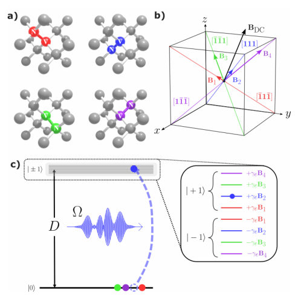
<figcaption class="paper-figure-caption"><b>Fig 1.</b> Figure 1: (a) The four possible crystallographic orientations of the NV center in the diamond lattice. The colored spheres represent nitrogen-vacancy centers, while the gray spheres represent carbon atoms. (b) Projection of an external magnetic field onto the quantization axis of each of the four NV orientations. (c) Selective spin manipulation achieved through optimal pulse shaping. In this example, the |0⟩→| + 1⟩transition of the [111]-oriented NV center (blue) is selectively driven without the application of a bias magnetic field, while the remaining NV centers stay in the |0⟩ ground state. The inset shows the corresponding energy-level structure induced by the external magnetic field.</figcaption>
</figure>
<figure class="paper-figure-card">
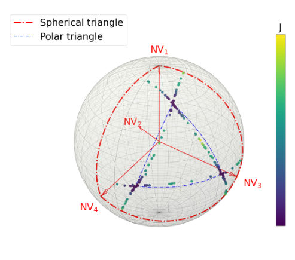
<figcaption class="paper-figure-caption"><b>Fig 2.</b> Figure 2: Optimal configuration of the first source obtained by PSO. The optimal (θ∗ 1, ϕ∗ 1) coordinates align along one of the polar triangles (blue) whose vertices are associated with the spherical triangle formed by the NV1,3,4 orientations (red). The color scale indicates low values (blue) to high values (yellow) of the objective function J.</figcaption>
</figure>
<figure class="paper-figure-card">
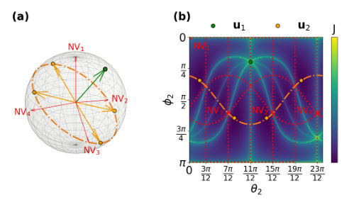
<figcaption class="paper-figure-caption"><b>Fig 3.</b> Figure 3: Optimal orientation for ˆu2 (orange arrows and orange dots) with ˆu1 (green arrow and green dot) fixed. (a) The orange arrows lie in the plane spanned by the orientations of the NV2 and NV3 centers. (b) Orthographic projection of the value of the cost function for ˆu2. Red crosses (&quot;×&quot;) correspond to the NV orientations and red dotted lines to the plane spanned by NV orientation pairs. The orange dashed line represents the plane spanned by the optimal configurations for the second source. As expected, planes spanned by the first source and an NV axis result in bad conditioning (high values in the color scale) due to their collinearity.</figcaption>
</figure>
<figure class="paper-figure-card">
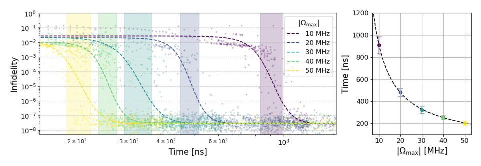
<figcaption class="paper-figure-caption"><b>Fig 4.</b> Figure 4: Left: Infidelity as a function of pulse duration for amplitude bounds (see values in inset for |Ωmax|). The data</figcaption>
</figure>
<figure class="paper-figure-card">
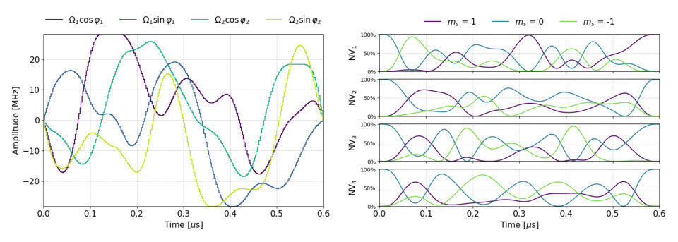
<figcaption class="paper-figure-caption"><b>Fig 5.</b> Figure 5: Simulation result for the ensemble optimization with µBgeBext = [−0.25, −1.62, 0.26] MHz, T = 600 ns and ∆t = 2 ns. Left: Control amplitudes during the implementation of the gate ˆUG = exp(−iπ ˆS+ x ) on the [111] orientation. The z axis of the laboratory frame is defined along the z axis of the diamond cristal. Right: Population dynamics for each NV orientations. A final fidelity of 99.99998% for ms = 1 for NV1 and ms = 0 for NV2, NV3, and NV4 was obtained for this implementation</figcaption>
</figure>
</div>

<p><strong>Summary.</strong> This paper presents a novel, optimization-based pulse-shaping control framework to improve vector magnetometry using NV centers. By designing tailored microwave pulses, the authors achieve selective spin manipulation and state control without needing a static external bias field. This breakthrough resolves systematic errors inherent in current NV magnetometry techniques, opening pathways for higher-accuracy sensing.</p>
<p><strong>Why it may be interesting.</strong> This work is highly relevant to AMO physics and quantum optics as it tackles the practical limitations of quantum sensing platforms by developing advanced control techniques to operate in regimes previously inaccessible due to experimental constraints.</p>
<details>
<summary>Detailed structure</summary>
<p><strong>Main problem.</strong> The primary challenge is overcoming systematic errors in vector magnetometry using NV centers that arise from the necessary reliance on a static external bias field.</p>
<p><strong>Main result.</strong> The authors introduce an optimization-based pulse-shaping framework that enables robust, selective quantum control of NV ensembles without requiring a static bias field.</p>
<p><strong>Method.</strong> The method employs Quantum Optimal Control (QOC) techniques, specifically utilizing Gradient Ascent Pulse Engineering (GRAPE) and analyzing the Dynamical Lie Algebra (DLA) to design optimal time-dependent driving fields.</p>
<p><strong>Model / system.</strong> The system is based on Nitrogen-Vacancy (NV) centers in diamond, whose spin dynamics are modeled using a Hamiltonian that includes drift and time-dependent control terms. The control is optimized for ensemble selectivity across multiple crystallographic orientations.</p>
<p><strong>Key observables.</strong> State-transfer fidelity, condition number $\kappa(M)$ of the generator matrix, and the ability to achieve orientation-selective and subspace-selective control.</p>
<p><strong>Important parameters / regimes.</strong> The required control fields ($\Omega_j(t)$), the dimensionless parameter $\gamma = \epsilon^2 / (4\omega)$, and the minimum condition number $\kappa \approx 1$ for optimal control.</p>
<p><strong>Assumptions / limitations.</strong> The analysis often relies on the Rotating Wave Approximation (RWA) and treats the nuclear spin projection ($m_I$) as a quasi-static parameter.</p>
<p><strong>Figures summary.</strong> Figure 1 illustrates the four crystallographic orientations of NV centers and demonstrates selective spin manipulation ($  ext{|0}
angle   o   ext{|+1}
angle$) achievable without a bias field.</p>
<p><strong>Paper structure.</strong> The paper progresses from identifying the limitations of bias-field magnetometry to developing a QOC framework. It details the Hamiltonian structure, analyzes the controllability via the DLA, and finally presents the optimization procedure to shape pulses for field-free, selective control.</p>
</details>
<details>
<summary>Abstract</summary>
<p>Nitrogen-vacancy (NV) centers in diamond are a leading platform for vector magnetometry, offering intrinsic sensitivity to both the magnitude and direction of magnetic fields. NV magnetometers typically rely on an external bias field to lift the degeneracy of the ground-state spin sublevels, enabling spectral discrimination of different NV orientations and spin transitions. At high accuracy, however, such a bias field systematically introduces errors through thermal, mechanical, and hysteretic drifts, thus hindering the accurate measurement of the magnetic field of interest. Several strategies have been proposed to address this limitation, including optical polarization-based orientation labeling, optical anisotropy, strong coupling to nearby nuclear spins, circular microwave polarization, and tailored pulse sequences. In this work, we introduce an optimization-based pulse-shaping control framework that enables selective and robust manipulation of NV ensembles without relying on a static bias field. Our method achieves both orientation-selective and subspace-selective control through optimal temporal modulation of the driving fields, providing a route to resolving spectral overlaps in degenerate NV systems.</p>
</details>
<p><sub><a href="#top">↑ back to top</a></sub></p>

<p><a id="paper-2609.17920"></a></p>
<h3 id="classical-quantum-and-general-probabilistic-state-discrimination-profiles"><a href="http://arxiv.org/abs/2609.17920v1">Classical, quantum, and general probabilistic state-discrimination profiles</a></h3>
<p><strong>Authors:</strong> Mihály Weiner<br>
<strong>Type:</strong> theory · <strong>Category:</strong> quantum information and computing · <strong>PDF:</strong> <a href="https://arxiv.org/pdf/2609.17920v1">https://arxiv.org/pdf/2609.17920v1</a><br>
<strong>Analysis basis:</strong> full PDF text, analyzed in chunks
<strong>Topic relevance:</strong> <code>quantum measurements</code> <strong>3/5</strong></p>
<div class="figure-strip-hint">↔ Scroll figures horizontally</div>
<div class="paper-figures-scroll">
<figure class="paper-figure-card">
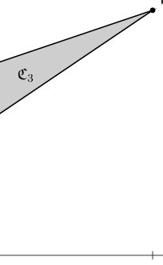
<figcaption class="paper-figure-caption"><b>Fig 1.</b> Figure 1: The symmetric slice x = y = z = s. The GPT region is the triangle OPW; its classical part is the darker triangle OMW. The dashed segment OM is t = 3s, or β = 0. The trine has s = 1 − √</figcaption>
</figure>
</div>

<p><strong>Summary.</strong> This paper develops a mathematical framework to characterize the boundaries between classical, quantum, and general probabilistic theories using a 'discrimination profile' function. By analyzing specific cases like three-state discrimination, the authors establish strict inequalities that quantify quantum advantages over classical predictions. This work deepens the understanding of operational quantum correlations beyond standard Bell inequalities.</p>
<p><strong>Why it may be interesting.</strong> The work provides a rigorous mathematical framework for quantifying the nonclassicality of quantum correlations in state discrimination, which is a fundamental problem in quantum information theory.</p>
<details>
<summary>Detailed structure</summary>
<p><strong>Main problem.</strong> The paper characterizes the set of achievable 'discrimination profiles' $F$ for distinguishing a collection of quantum states, comparing classical, quantum, and general probabilistic theories.</p>
<p><strong>Main result.</strong> It establishes a hierarchy of profile regions ($C_n \subseteq Q_n \subseteq G_n$) and derives specific bounds, such as $eta_C < eta_Q \le 2/3 < 1 = eta_{GPT}$ for $n=3$.</p>
<p><strong>Method.</strong> The authors use polytope theory, linear programming, and geometric analysis (e.g., analyzing the trine profile) to derive necessary and sufficient conditions for a profile to belong to a specific physical theory.</p>
<p><strong>Model / system.</strong> The model involves discriminating $n$ quantum states (e.g., qubits) using optimal measurements, formalized through the 'discrimination profile' $F(H)$ for any subcollection $H$.</p>
<p><strong>Key observables.</strong> The discrimination profile $F(H)$, and the derived nonclassicality witness $eta = F(123) - F(12) - F(13) - F(23)$.</p>
<p><strong>Important parameters / regimes.</strong> The number of states $n$, the dimension of the Hilbert space (e.g., qubits), and the prior probabilities associated with the states.</p>
<p><strong>Assumptions / limitations.</strong> The analysis relies on characterizing the regions as polytopes and comparing the results derived from the general probabilistic theory (GPT) against quantum and classical limits.</p>
<p><strong>Figures summary.</strong> Not specified in the notes, but the analysis focuses on deriving inequalities and comparing the values of $eta$ across different physical regimes.</p>
<p><strong>Paper structure.</strong> The paper systematically defines the profile regions, proves convexity, establishes the polytope structure of the classical region, and then derives specific bounds and separations (especially for $n=3$) by comparing the bounds derived from classical, quantum, and general theories.</p>
</details>
<details>
<summary>Abstract</summary>
<p>For a collection of states indexed by $[n]={1,\ldots,n}$, let $F(H)$ denote the optimal unnormalized minimum discrimination error for each nonempty subfamily $H\subseteq[n]$. We call $F$ the discrimination profile and characterize exactly which profiles can arise in a general probabilistic theory (GPT). For fixed $n$, the GPT region $\mathfrak{G}_n$ is a bounded rational polytope, giving a hierarchy $\mathfrak{C}_n\subseteq\mathfrak{Q}_n\subseteq\mathfrak{G}_n$ of classical, quantum, and GPT profiles, analogous to the local--quantum--no-signalling hierarchy in Bell theory.   For $n=3$ we determine the classical and GPT polytopes explicitly. Within $\mathfrak{G}_3$, the classical region is characterized by $β:=F(123)-F(12)-F(13)-F(23)\le0$, while the GPT maximum is $1$. For qubit triples, the maximal value is attained by the trine, $β_{\mathrm{tr}}=3\sqrt3/2-2$, and we prove the dimension-independent quantum bound $β_{\mathrm Q}\le2/3$, with a slight further improvement. Hence $0=β_{\mathrm C}<3\sqrt3/2-2\leβ_{\mathrm Q}\le2/3<1=β_{\mathrm{GPT}}$. We conjecture $β_{\mathrm Q}=β_{\mathrm{tr}}$ and prove this for arbitrary pure-state triples, together with further supporting evidence.   For arbitrary $n$, every classical facet admitting a GPT violation already admits a quantum violation in dimension at most $3$. A four-state qubit example shows that quantum success profiles need not be submodular, unlike for $n=3$. Finally, we exhibit a four-dimensional quantum triple whose discrete profile is classical for all subfamilies but becomes nonclassical when unequal priors are allowed.</p>
</details>
<p><sub><a href="#top">↑ back to top</a></sub></p>

<p><a id="paper-2609.18354"></a></p>
<h3 id="complex-magnetic-properties-of-euagas-single-crystals"><a href="http://arxiv.org/abs/2609.18354v1">Complex magnetic properties of EuAgAs single crystals</a></h3>
<p><strong>Authors:</strong> Karolina Kowalczyk, Kamila Komędera, Janusz Przewoźnik, Łukasz Gondek, Czesław Kapusta, Wojciech Tabiś, Michał Babij, Lan Maria Tran, Damian Rybicki<br>
<strong>Type:</strong> experiment · <strong>Category:</strong> other · <strong>PDF:</strong> <a href="https://arxiv.org/pdf/2609.18354v1">https://arxiv.org/pdf/2609.18354v1</a><br>
<strong>Analysis basis:</strong> full PDF text, analyzed in chunks
<strong>Topic relevance:</strong> <code>analog quantum simulation</code> <strong>3/5</strong></p>
<div class="figure-strip-hint">↔ Scroll figures horizontally</div>
<div class="paper-figures-scroll">
<figure class="paper-figure-card">
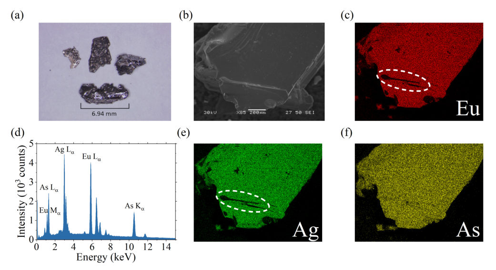
<figcaption class="paper-figure-caption"><b>Fig 1.</b> FIG. 1. (a) Photo of example EuAgAs single crystals, (b) SEM image, (d) EDX spectra, (c), (e) and (f) SEM images of EuAgAs single crystal with individual elemental maps provided by x-ray microanalysis. Reproduced from: K. Podgórska et al., Synthesis of europium-based crystals containing As or P by a flux method: Attempts to grow EuAgP single crystals, Solid State Sciences 158 (2024) 107736, Copyright ©2024 Elsevier Masson SAS. All rights reserved.</figcaption>
</figure>
<figure class="paper-figure-card">
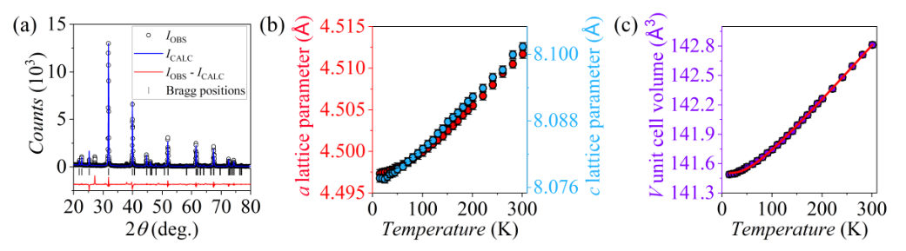
<figcaption class="paper-figure-caption"><b>Fig 2.</b> FIG. 2. Results of x-ray diffraction studies in the temperature range 15-300 K. (a) Rietveld refinement (blue line) of diffraction pattern collected at 300 K with Bragg positions marked by bars, reflection at 27◦of 2θ originates from remains of Bi flux. (b) Temperature dependence of a and c lattice parameters, and (c) the unit cell volume V with fitted Debye’s curve, Eq. 1.</figcaption>
</figure>
<figure class="paper-figure-card">
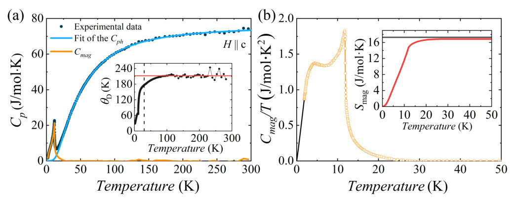
<figcaption class="paper-figure-caption"><b>Fig 3.</b> FIG. 3. (a) Temperature dependence of specific heat Cp (solid points). The solid blue line illustrates the phonon contribution (Cph), which was calculated using Eq. 3. The solid orange line represents the magnetic contribution (Cmag) to the heat capacity determined as a difference between Cp and Cph. The inset shows variation of the equivalent Debye temperatures θD as a function of temperature. The dashed vertical line denotes the temperature above which magnetic contribution to Cp vanishes. A horizontal solid red line represents the fit to the experimental data points above T = 80 K. Panel (b) shows the temperature dependence of Cmag/T (orange points) with extrapolation below 1.84 K (black...</figcaption>
</figure>
<figure class="paper-figure-card">
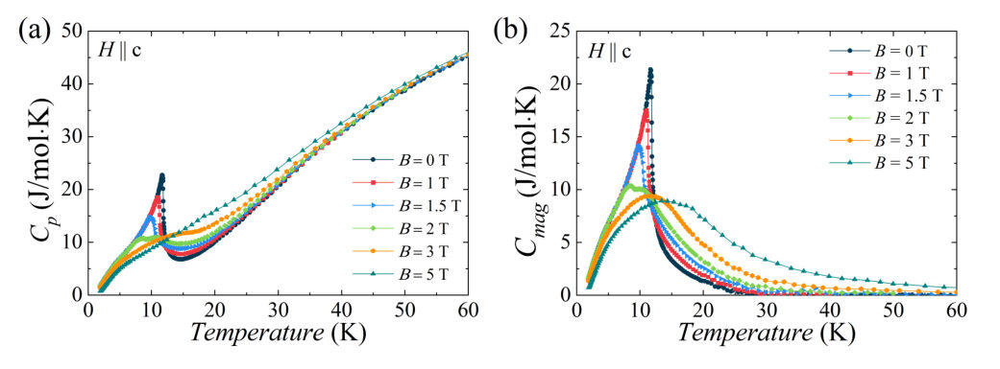
<figcaption class="paper-figure-caption"><b>Fig 4.</b> FIG. 4. Temperature dependence of (a) specific heat capacity Cp and (b) its magnetic contribution Cmag measured at different magnetic fields applied along crystallographic c axis.</figcaption>
</figure>
<figure class="paper-figure-card">
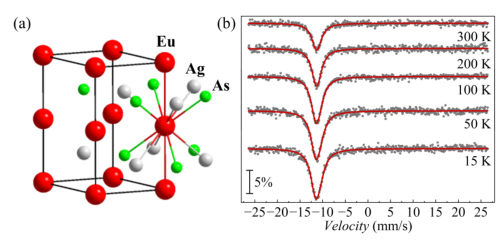
<figcaption class="paper-figure-caption"><b>Fig 5.</b> FIG. 5. a) Unit cell and the local surrounding of Eu in EuA- gAs, (b) 151Eu Mössbauer spectra measured at 300 K, 200 K, 100 K, 50 K, and 15 K, i.e., in the paramagnetic state, with their fits (solid lines).</figcaption>
</figure>
</div>

<p><strong>Summary.</strong> This work experimentally characterizes the complex magnetic phase diagram of EuAgAs, an antiferromagnetic topological material. Using multiple techniques including magnetometry and heat capacity, the authors confirm antiferromagnetic ordering and reveal several field-induced transitions. The results strongly suggest a noncollinear magnetic structure, making it a valuable system for studying competing magnetic interactions.</p>
<p><strong>Why it may be interesting.</strong> The investigation into field-induced metamagnetic transitions and the suggestion of noncollinear or skyrmion-like states in a real material provides an excellent experimental benchmark for theoretical models of frustrated magnetism and competing exchange interactions.</p>
<details>
<summary>Detailed structure</summary>
<p><strong>Main problem.</strong> To thoroughly investigate the structural, magnetic, and local electronic properties of the antiferromagnetic topological material EuAgAs single crystals, clarifying its complex magnetic behavior.</p>
<p><strong>Main result.</strong> The material exhibits antiferromagnetic ordering below $T_N \approx 12$ K, characterized by pronounced magnetic anisotropy and multiple field-induced metamagnetic transitions, suggesting a noncollinear or potentially skyrmion-like magnetic ground state.</p>
<p><strong>Method.</strong> A combination of experimental techniques was used, including X-ray diffraction, heat capacity measurements, DC/AC magnetization measurements, and Mössbauer spectroscopy on Eu isotopes.</p>
<p><strong>Model / system.</strong> The study focuses on EuAgAs, a hexagonal crystal structure ($P6_3/mmc$) rare-earth compound whose magnetic properties are governed by competing magnetic interactions, possibly described by RKKY-type interactions.</p>
<p><strong>Key observables.</strong> Magnetic susceptibility ($\chi'$ and $\chi''$), heat capacity ($C_p$), lattice parameters ($a, c$), Mössbauer isomer shift ($\delta$), and magnetization ($M$) as a function of temperature and applied magnetic field.</p>
<p><strong>Important parameters / regimes.</strong> Antiferromagnetic ordering temperature ($T_N \approx 12$ K); effective magnetic moments ($\mu_{\perp c}^{	ext{eff}} \approx 7.24 \mu_B$); Weiss temperature constants ($    heta_{\perp c}^p = 12.16    ext{ K}$); and critical magnetic fields inducing transitions.</p>
<p><strong>Assumptions / limitations.</strong> The analysis sometimes approximates $C_p$ by neglecting the electronic contribution, and the identification of exotic phases like skyrmions is based on analogy with other systems, lacking direct confirmation.</p>
<p><strong>Figures summary.</strong> Figures illustrate XRD results showing lattice parameter changes, heat capacity curves revealing the $T_N$ peak, and magnetic phase diagrams mapping out transitions based on susceptibility and magnetization measurements.</p>
<p><strong>Paper structure.</strong> The paper systematically analyzes the structure (XRD), thermal properties ($C_p$), and magnetic response (M, $\chi$, Mössbauer) of EuAgAs. It builds a magnetic phase diagram by correlating anomalies in these measurements to identify the magnetic ground state and field-induced transitions.</p>
</details>
<details>
<summary>Abstract</summary>
<p>EuAgAs is an antiferromagnetic topological material exhibiting intriguing magnetic behavior. We investigate its structural, magnetic, and local electronic properties using X ray diffraction, Mössbauer spectroscopy, dc magnetization, ac susceptibility, and heat capacity measurements. The results confirm antiferromagnetic ordering below $T_\text{N}$ and reveal pronounced magnetic anisotropy and several field induced metamagnetic transitions. We construct the magnetic phase diagram of EuAgAs, identifying several distinct magnetic regions. The field and temperature dependent behavior observed suggests a noncollinear magnetic structure in the low field regime. The sequence of field induced transitions resembles that observed in centrosymmetric rare earth compounds hosting skyrmion phases, suggesting that competing magnetic interactions may play an important role in stabilizing the observed magnetic states.</p>
</details>
<p><sub><a href="#top">↑ back to top</a></sub></p>

<p><a id="paper-2609.18558"></a></p>
<h3 id="information-geometry-of-four-parameter-single-qutrit-states-from-quantum-to-semiclassical-geometric-tensors"><a href="http://arxiv.org/abs/2609.18558v1">Information Geometry of Four-Parameter Single-Qutrit States: From Quantum to Semiclassical Geometric Tensors</a></h3>
<p><strong>Authors:</strong> Xue-xiang Xu, Kai-xu Cai, Xue-feng Zhan, Hong-chun Yuan<br>
<strong>Type:</strong> theory · <strong>Category:</strong> quantum information and computing · <strong>PDF:</strong> <a href="https://arxiv.org/pdf/2609.18558v1">https://arxiv.org/pdf/2609.18558v1</a><br>
<strong>Analysis basis:</strong> full PDF text, analyzed in chunks
<strong>Topic relevance:</strong> <code>quantum measurements</code> <strong>3/5</strong></p>
<div class="figure-strip-hint">↔ Scroll figures horizontally</div>
<div class="paper-figures-scroll">
<figure class="paper-figure-card">
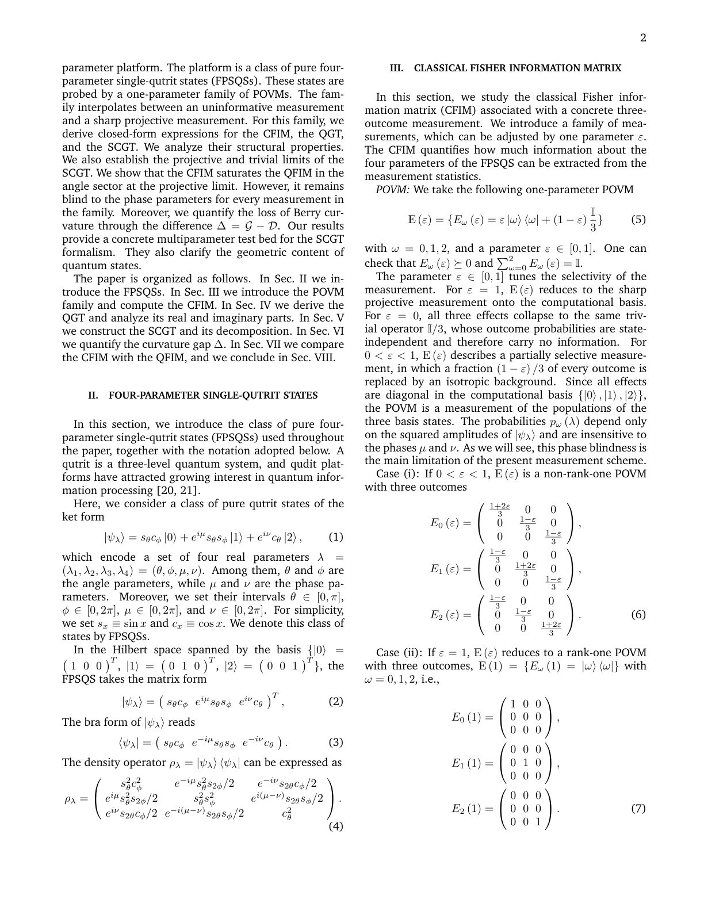
<figcaption class="paper-figure-caption"><b>Fig 1.</b> Low-resolution page preview, page 2</figcaption>
</figure>
<figure class="paper-figure-card">
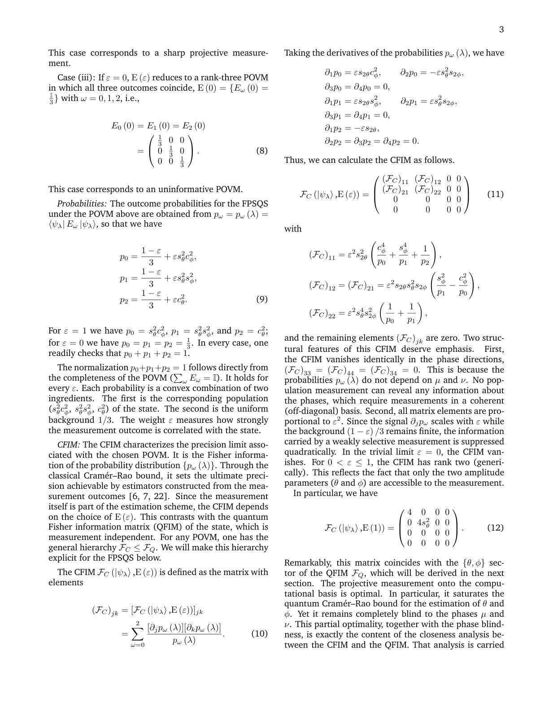
<figcaption class="paper-figure-caption"><b>Fig 2.</b> Low-resolution page preview, page 3</figcaption>
</figure>
<figure class="paper-figure-card">
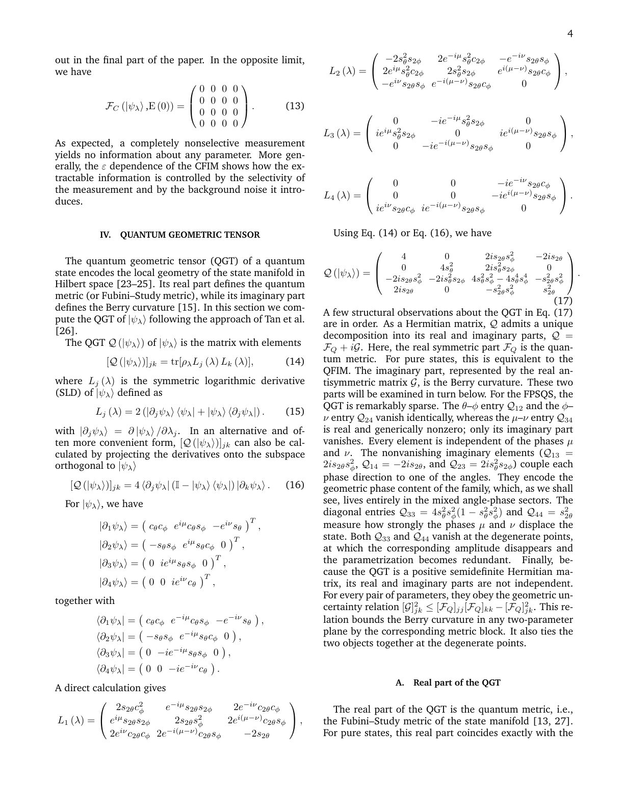
<figcaption class="paper-figure-caption"><b>Fig 3.</b> Low-resolution page preview, page 4</figcaption>
</figure>
<figure class="paper-figure-card">
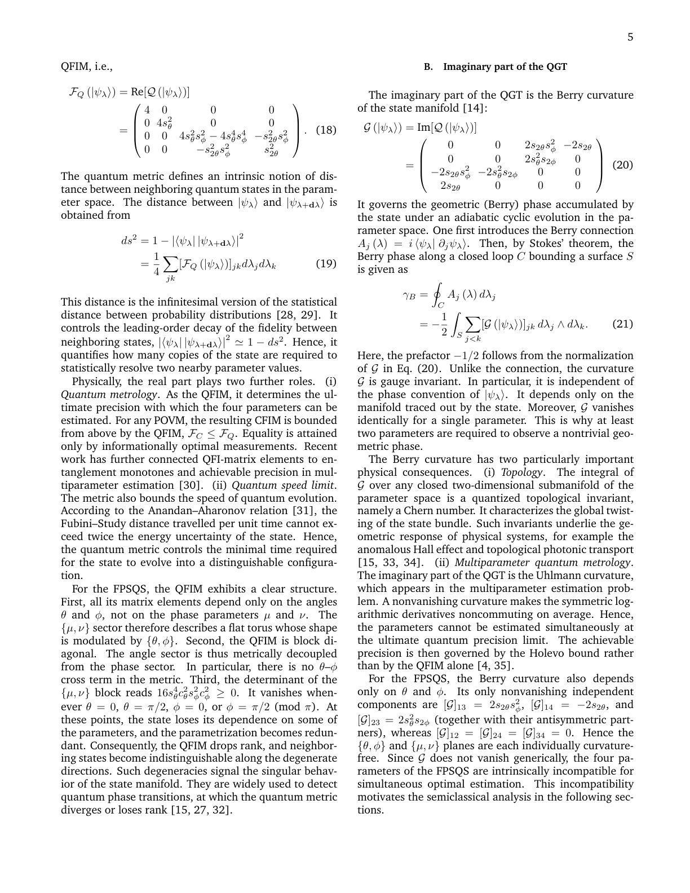
<figcaption class="paper-figure-caption"><b>Fig 4.</b> Low-resolution page preview, page 5</figcaption>
</figure>
<figure class="paper-figure-card">
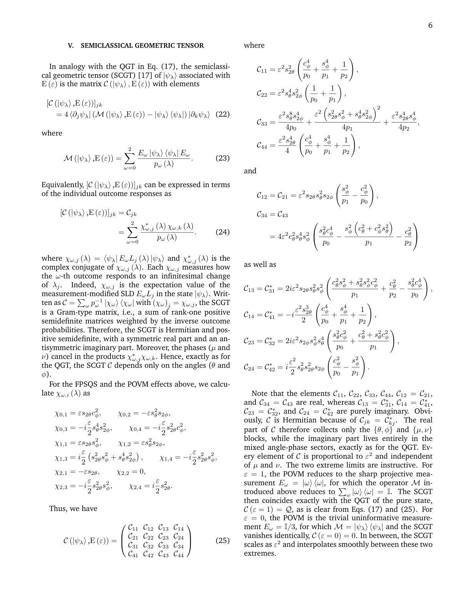
<figcaption class="paper-figure-caption"><b>Fig 5.</b> Low-resolution page preview, page 6</figcaption>
</figure>
</div>

<p><strong>Summary.</strong> This work performs an information-geometric analysis on four-parameter single-qutrit states to study the relationship between the quantum and classical limits of parameter estimation. By deriving the Semiclassical Geometric Tensor (SCGT), the authors quantify how realistic measurements partially degrade the intrinsic quantum geometric structure. This provides a crucial, solvable model for understanding measurement-induced information loss in quantum systems.</p>
<p><strong>Why it may be interesting.</strong> It provides an exactly solvable, multi-parameter platform to test fundamental limits in quantum metrology, specifically quantifying the loss of quantum geometric information due to measurement imperfections.</p>
<details>
<summary>Detailed structure</summary>
<p><strong>Main problem.</strong> The paper investigates the gap between the classical and quantum Fisher information matrices (CFIM and QFIM) in multi-parameter quantum estimation, quantifying how realistic measurements degrade the intrinsic geometric content of quantum states.</p>
<p><strong>Main result.</strong> The Semiclassical Geometric Tensor (SCGT) was derived, showing that its real part splits into the CFIM and a measurement-transmitted metric, while its imaginary part yields a semiclassical Berry curvature.</p>
<p><strong>Method.</strong> The study uses Information Geometry to derive closed-form expressions for the CFIM, Quantum Geometric Tensor (QGT), and SCGT for a specific class of quantum states.</p>
<p><strong>Model / system.</strong> The analysis focuses on pure four-parameter single-qutrit states (FPSQSs), parameterized by $(  heta, \phi, \mu, 
u)$, probed by a one-parameter family of measurements (POVM).</p>
<p><strong>Key observables.</strong> CFIM, QFIM, QGT, SCGT, and the measurement-dependent gap ($\Delta = G - D$).</p>
<p><strong>Important parameters / regimes.</strong> The measurement selectivity parameter $\epsilon \in [0, 1]$, and the state parameters $(  heta, \phi, \mu, 
u)$.</p>
<p><strong>Assumptions / limitations.</strong> The analysis relies on a specific parametrization of the state and the use of a diagonal POVM measurement scheme.</p>
<p><strong>Figures summary.</strong> Not specified.</p>
<p><strong>Paper structure.</strong> The paper proceeds by defining the relevant geometric tensors (CFIM, QGT, SCGT) for the FPSQSs, deriving their closed-form expressions, and analyzing their behavior in the limits of projective ($\epsilon=1$) and trivial ($\epsilon=0$) measurements.</p>
</details>
<details>
<summary>Abstract</summary>
<p>The gap between the classical and quantum Fisher information matrices (CFIM and QFIM) separates what is operationally accessible through measurements from what is intrinsic to a quantum state. In the multiparameter setting, this quantum obstruction is generically not saturable. Motivated by the recently introduced semiclassical geometric tensor (SCGT), we perform an explicit information-geometric study for a class of pure four-parameter single-qutrit states (FPSQSs). These states are probed by a one-parameter family of measurements that interpolates between an uninformative POVM and a sharp projective measurement. We derive closed-form expressions for the CFIM, the quantum geometric tensor (QGT), and the SCGT. We show that the SCGT reproduces the QGT in the projective limit and vanishes in the trivial limit. The real part of the SCGT splits into two terms: the CFIM and an additional nonnegative measurement-transmitted metric in the phase sector. Its imaginary part provides a semiclassical Berry curvature. Its loss relative to the QGT is quantified by a measurement-dependent gap. Our results provide an exactly solvable four-parameter platform for the semiclassical geometric framework. They also clarify how realistic measurements read out the geometric content of quantum states, and how they partially degrade it.</p>
</details>
<p><sub><a href="#top">↑ back to top</a></sub></p>

<p><a id="paper-2609.18655"></a></p>
<h3 id="learning-to-program-adaptive-non-local-observables-for-machine-learning"><a href="http://arxiv.org/abs/2609.18655v1">Learning to Program Adaptive Non-Local Observables for Machine Learning</a></h3>
<p><strong>Authors:</strong> Yu-Ting Lee, Samuel Yen-Chi Chen, Huan-Hsin Tseng<br>
<strong>Type:</strong> both · <strong>Category:</strong> quantum information and computing · <strong>PDF:</strong> <a href="https://arxiv.org/pdf/2609.18655v1">https://arxiv.org/pdf/2609.18655v1</a><br>
<strong>Analysis basis:</strong> full PDF text, analyzed in chunks
<strong>Topic relevance:</strong> <code>quantum measurements</code> <strong>3/5</strong></p>
<div class="figure-strip-hint">↔ Scroll figures horizontally</div>
<div class="paper-figures-scroll">
<figure class="paper-figure-card">
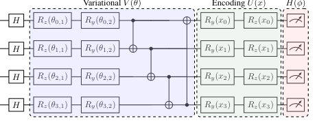
<figcaption class="paper-figure-caption"><b>Fig 1.</b> Fig. 1: VQC architecture of QFWP-ANO. Each layer con- sists parameterized Rz, Ry rotations, circular CNOT gates, and encoding U(x). Trainable k-local observables H(ϕ) are employed for measurement.</figcaption>
</figure>
<figure class="paper-figure-card">
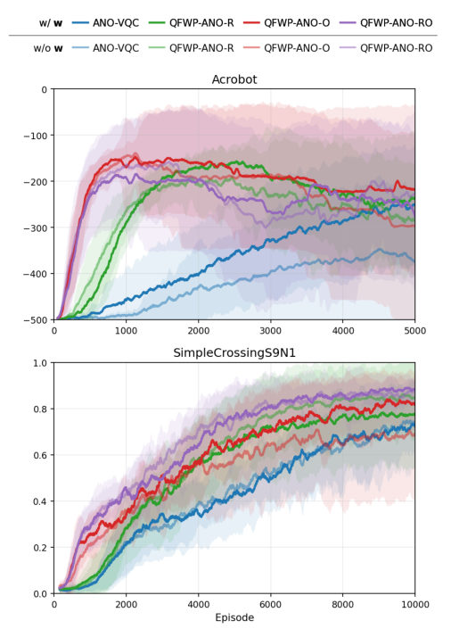
<figcaption class="paper-figure-caption"><b>Fig 2.</b> Fig. 2: Reward over episodes. Band is ± standard deviation.</figcaption>
</figure>
<figure class="paper-figure-card">

<figcaption class="paper-figure-caption"><b>Fig 3.</b> Fig. 2 shows the learning curves, with (dark) and without (light) the trainable input scaling w. In Acrobot, all three QFWP-ANO variants substantially outperform the ANO-VQC baseline from episode 1000 to 4000. Although the models ultimately converge to similar final returns, QFWP-ANO-O and QFWP-ANO-RO reach their peak performance as early as around episode 1000. This early convergence demonstrates that programming the observable effectively improves sample efficiency. In SimpleCrossingS9N1, QFWP-ANO-RO reaches</figcaption>
</figure>
</div>

<p><strong>Summary.</strong> This paper introduces QFWP-ANO, a novel quantum neural network architecture that uses a classical hypernetwork to dynamically program both the circuit parameters and the non-local measurement observable based on the input data. By enabling input-conditioned adaptive non-local observables, the model significantly enhances QNN performance, achieving state-of-the-art results on both time-series forecasting and reinforcement learning benchmarks.</p>
<p><strong>Why it may be interesting.</strong> This work directly addresses the hardware-efficient computation bottleneck in quantum machine learning by proposing a structured way to incorporate input-dependent, multi-qubit measurements, which is crucial for realizing quantum advantage in complex data tasks.</p>
<details>
<summary>Detailed structure</summary>
<p><strong>Main problem.</strong> Variational Quantum Circuits (VQCs) used in Quantum Neural Networks (QNNs) are inherently limited by local measurements, and existing adaptive methods only use static observables.</p>
<p><strong>Main result.</strong> The proposed QFWP-ANO architecture, which dynamically conditions both VQC parameters and non-local observables on the input, significantly outperforms existing baselines in both multivariate time-series forecasting and reinforcement learning tasks.</p>
<p><strong>Method.</strong> The authors introduce QFWP-ANO, utilizing a classical hypernetwork to generate input-dependent parameters ($    heta$ and $\phi$) for the VQC and the non-local observable, respectively.</p>
<p><strong>Model / system.</strong> The model is a QNN built upon VQCs. It processes classical input $x$ through an encoding, a parameterized unitary circuit $V(	heta)$, and a measurement using a trainable, input-conditioned non-local observable $H(\phi)$.</p>
<p><strong>Key observables.</strong> Mean Squared Error (MSE) and Mean Absolute Error (MAE) for time-series forecasting; final return and sample efficiency for RL tasks.</p>
<p><strong>Important parameters / regimes.</strong> VQC depth ($D \in \{1, 3\}$), non-locality of the observable ($k \in \{1, \dots, 7\}$), and the specific hypernetwork conditioning mechanism.</p>
<p><strong>Assumptions / limitations.</strong> The primary assumption is that input-conditioning the non-local observable and circuit parameters via a hypernetwork can overcome the limitations of static, local measurements in QNNs.</p>
<p><strong>Figures summary.</strong> Figure 1 illustrates the QFWP-ANO VQC architecture. Figure 2 shows learning curves for RL tasks comparing QFWP-ANO variants to baselines. Table 2 summarizes MTSF performance (MSE) across various settings, and Table 3 analyzes performance based on VQC depth and observable non-locality.</p>
<p><strong>Paper structure.</strong> The paper first establishes the limitations of standard QNNs. It then proposes the QFWP-ANO architecture using a hypernetwork. The methodology is validated through extensive experiments on two distinct tasks: multivariate time-series forecasting (MTSF) and reinforcement learning (RL), comparing performance against multiple state-of-the-art baselines.</p>
</details>
<details>
<summary>Abstract</summary>
<p>Quantum neural networks (QNNs) are typically built from variational quantum circuits (VQCs), which are limited by local measurements. Adaptive non-local observables (ANO) address this by jointly optimizing circuit parameters and multi-qubit measurements. However, existing ANO-based VQCs learn only a single static observable that remains invariant across all inputs. We propose QFWP-ANO, a novel architecture which employs a classical hypernetwork to dynamically program VQC parameters and/or non-local observables conditioned on each input. On multivariate time-series forecasting across four ETT datasets, QFWP-ANO achieves the lowest MSE in 16 of 20 settings and second-lowest in the remaining four, surpassing ANO-based and other strong baselines. On reinforcement learning tasks, QFWP-ANO consistently surpasses ANO-VQCs. Our results establish input-conditioned ANO as an effective approach for enhancing QNNs.</p>
</details>
<p><sub><a href="#top">↑ back to top</a></sub></p>

<p><a id="paper-2609.18079"></a></p>
<h3 id="progress-in-quantum-telescopes"><a href="http://arxiv.org/abs/2609.18079v1">Progress in quantum telescopes</a></h3>
<p><strong>Authors:</strong> David R. Gozzard, Fiona H. Panther, Andrew G. White<br>
<strong>Type:</strong> theory · <strong>Category:</strong> other · <strong>PDF:</strong> <a href="https://arxiv.org/pdf/2609.18079v1">https://arxiv.org/pdf/2609.18079v1</a><br>
<strong>Analysis basis:</strong> full PDF text, analyzed in chunks
<strong>Topic relevance:</strong> <code>quantum measurements</code> <strong>3/5</strong></p>
<div class="figure-strip-hint">↔ Scroll figures horizontally</div>
<div class="paper-figures-scroll">
<figure class="paper-figure-card">
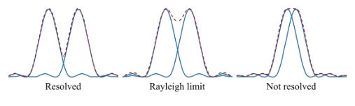
<figcaption class="paper-figure-caption"><b>Fig 1.</b> Figure 1. Illustration of the Rayleigh criterion for resolution of an imaging system. The blue traces depict the intensity profile of the Airy disks resulting from two point sources through the PSF of a telescope. The red dashed trace depicts the summed intensity profile of the two Airy disks. Left-to-right: objects are resolved, objects are at the Rayleigh limit, and objects are unresolved. The Abbe and Sparrow limits are described in Section 1.1.1.</figcaption>
</figure>
<figure class="paper-figure-card">
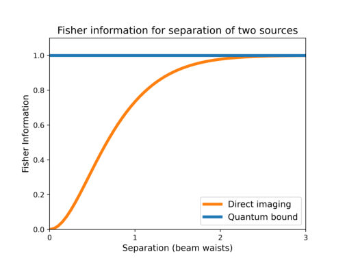
<figcaption class="paper-figure-caption"><b>Fig 2.</b> Figure 2. Fisher information for the separation of two weak thermal sources according to the classical and quantum Cramér-Rao bounds based on (2019a). The separation is given in multiples of the beam waist of the imaging system optics.</figcaption>
</figure>
<figure class="paper-figure-card">
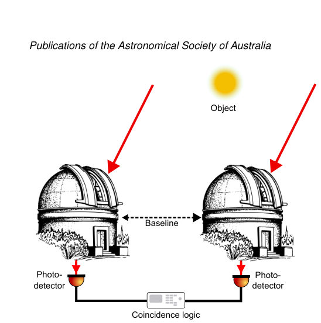
<figcaption class="paper-figure-caption"><b>Fig 3.</b> Figure 3. Generalised schematic of an intensity interferometer based on the Hanbury Brown-Twiss (HBT) effect.</figcaption>
</figure>
<figure class="paper-figure-card">
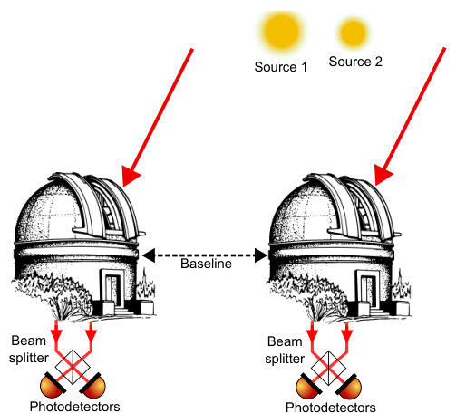
<figcaption class="paper-figure-caption"><b>Fig 4.</b> Figure 4. Generalised schematic of a Stankus-Nomerotski-Slosar-Vintskevich two-photon amplitude interferometer. Two-photon states from two optical sources are interfered at the beam splitter in each observing station. Correlations between the measurements at the two stations determine the source visibility. Measurement data can be transmitted between the stations electronically.</figcaption>
</figure>
<figure class="paper-figure-card">
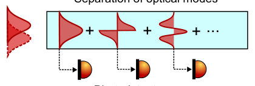
<figcaption class="paper-figure-caption"><b>Fig 5.</b> Figure 5. Generalised schematic of a SPADE imaging system. Each mode is separated and coupled to a separate photon-counting detector.</figcaption>
</figure>
</div>

<p><strong>Summary.</strong> This review surveys the progress toward building 'quantum telescopes' capable of super-resolution imaging beyond classical diffraction limits. It leverages quantum information theory to show that quantum measurements can extract phase information inaccessible to classical methods. The paper outlines the theoretical advances, technological hurdles, and future vision for revolutionizing astronomical observation.</p>
<p><strong>Why it may be interesting.</strong> This work bridges quantum information theory (quantum estimation, QCRB) with large-scale physical systems (astronomy/optics), providing a roadmap for quantum enhancement in observational science.</p>
<details>
<summary>Detailed structure</summary>
<p><strong>Main problem.</strong> The primary challenge is overcoming the classical diffraction limit in telescope angular resolution, which is fundamentally constrained by the ratio of wavelength to aperture diameter.</p>
<p><strong>Main result.</strong> Quantum information theory suggests that quantum-optimal measurement methods can enable super-resolution imaging, potentially achieving resolutions orders of magnitude better than current observatories.</p>
<p><strong>Method.</strong> The review details the application of quantum estimation theory, specifically utilizing the Quantum Cramér-Rao Bound (QCRB), to derive fundamental limits on achievable angular resolution.</p>
<p><strong>Model / system.</strong> The system under study is astronomical imaging using large telescopes across optical and infrared wavelengths. The theoretical framework compares classical direct imaging (DI) with quantum-enhanced measurement protocols.</p>
<p><strong>Key observables.</strong> Angular resolution, Point Spread Function (PSF), and the achievable precision quantified by the Fisher Information (FI) and QCRB.</p>
<p><strong>Important parameters / regimes.</strong> Wavelength ($\lambda$), aperture diameter ($D$), and the target resolution approaching one microarcsecond ($1 \mu	ext{as}$).</p>
<p><strong>Assumptions / limitations.</strong> The analysis assumes that the quantum state of the light field is the only accessible resource, and that quantum measurement techniques can be practically implemented in astronomical settings.</p>
<p><strong>Figures summary.</strong> Figure 1 illustrates the classical Rayleigh criterion for resolution. Figure 2 compares the Fisher information for source separation using classical vs. quantum Cramér-Rao bounds, showing the quantum advantage.</p>
<p><strong>Paper structure.</strong> The paper first establishes the classical diffraction limit. It then introduces quantum metrology to derive super-resolution bounds, discusses the theoretical tools (QFI, QCRB), reviews laboratory demonstrations, and concludes with a vision for practical quantum telescopes.</p>
</details>
<details>
<summary>Abstract</summary>
<p>Classically, the angular resolution of a telescope is limited by its diffraction limit: the ratio of its observing wavelength to its diameter. Developments in quantum information theory over the past decade have uncovered quantum-optimal measurement methods that enable super-resolution imaging beyond the diffraction limit, and many laboratory-scale demonstrations of these methods have been performed over the past decade, culminating in the recent first on-sky demonstration of quantum-enhanced astronomical imaging. In this Review, we detail the current progress and achievements of these theoretical and experimental results, discuss the astronomical science cases motivating the development of higher resolution telescopes, summarise the technological challenges facing the practical application of quantum imaging technologies to astronomy, and present a vision for the realization of \emph{quantum telescopes} with imaging resolutions orders of magnitude better than current observatories.</p>
</details>
<p><sub><a href="#top">↑ back to top</a></sub></p>

<p><a id="paper-2609.17870"></a></p>
<h3 id="quantifying-and-bounding-spatiotemporal-correlations-in-quantum-noise"><a href="http://arxiv.org/abs/2609.17870v1">Quantifying and Bounding Spatiotemporal Correlations in Quantum Noise</a></h3>
<p><strong>Authors:</strong> Guilherme Zambon, Diogo O. Soares-Pinto<br>
<strong>Type:</strong> theory · <strong>Category:</strong> quantum information and computing · <strong>PDF:</strong> <a href="https://arxiv.org/pdf/2609.17870v1">https://arxiv.org/pdf/2609.17870v1</a><br>
<strong>Analysis basis:</strong> full PDF text, analyzed in chunks
<strong>Topic relevance:</strong> <code>correlated / nonlocal dissipation</code> <strong>3/5</strong></p>
<div class="figure-strip-hint">↔ Scroll figures horizontally</div>
<div class="paper-figures-scroll">
<figure class="paper-figure-card">
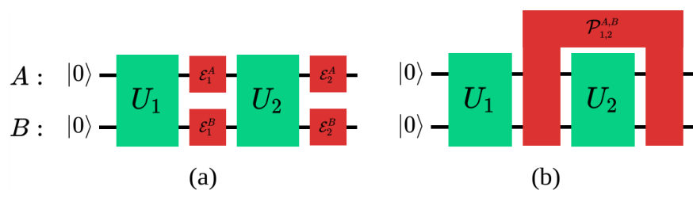
<figcaption class="paper-figure-caption"><b>Fig 1.</b> FIG. 1. Two noise models for a simple circuit. In both cases, the two qubits are initially prepared in the |0⟩state and are subsequently acted upon by a first layer of unitaries represented by U1. Following this initial operation, and prior to the subsequent layer U2, the qubits are subject to noise arising from unwanted interactions with their surroundings. The noise occurs again after U2, such that the final state of the qubits is determined by the joint action of the unitaries and the noise processes. (a) The standard approach to this scenario is to assume the noise is uncorrelated both in space and time, being described by local channels. (b) In general, we might have spatiotemporally...</figcaption>
</figure>
<figure class="paper-figure-card">
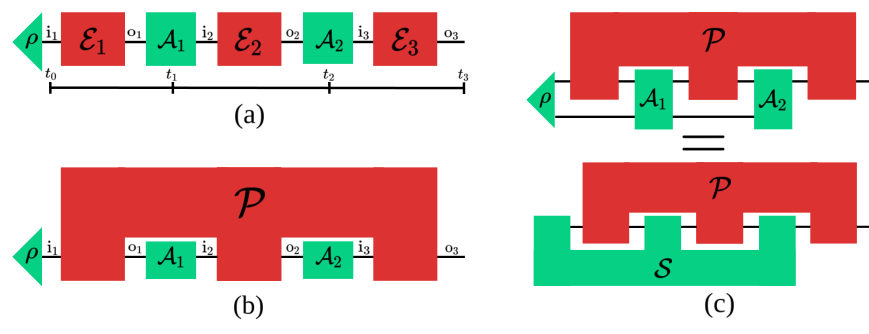
<figcaption class="paper-figure-caption"><b>Fig 2.</b> FIG. 2. (a) Three-step evolution of a quantum system under control operations and Markovian noise. The system is prepared in the state ρ ∈D(Hi1) at time t0 and then is subject to control operations A1 : D(Ho1) →D(Hi2) and A2 : D(Ho2) →D(Hi3) at times t1 and t2, respectively. The interactions with an uncontrolled, yet Markovian, environment between operations are described by the channels Ej : D(Hij) →D(Hoj). The final state ρ′ ∈D(Ho3) of the system is given by ρ′ = E3 ◦A2 ◦E2 ◦A1 ◦E1(ρ). (b) Three-step evolution of a quantum system under control operations and non-Markovian noise. Unlike in the Markovian case, the noise process cannot be described by a set of independent channels. In...</figcaption>
</figure>
<figure class="paper-figure-card">
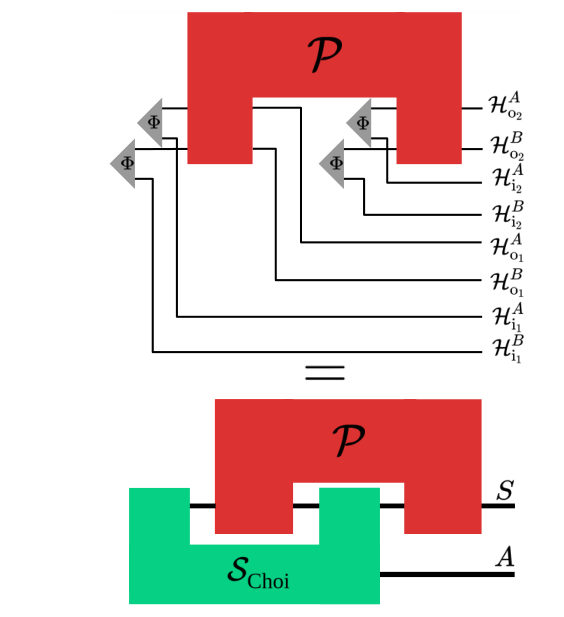
<figcaption class="paper-figure-caption"><b>Fig 3.</b> FIG. 3. Circuit implementing the Choi state of a process tensor P ∈P2 2. Each process input is supplied with one half of a max- imally entangled state, while the corresponding reference systems and process outputs are retained. The resulting deterministic prob- ing comb SChoi ∈S2 produces the normalized process Choi state, P(SChoi) = ΥP. The retained reference systems are included in the output ancilla of the probing comb.</figcaption>
</figure>
<figure class="paper-figure-card">

<figcaption class="paper-figure-caption"><b>Fig 4.</b> FIG. 4. Memory-dimension signatures for a two-step process on two system qubits. (a) Relative-entropy Choi temporal correlations for classical ZZ memory. The common dE = 2 memory reaches its one-bit ceiling, while the two independent memories reach the dE = 4 ceiling of two bits. (b) Corresponding results for quantum XY exchange. The common memory crosses the classical ceiling and approaches the two-bit quantum ceiling. Two independent iSWAPs reach four bits at θ = π/2, saturating both the dE = 4 environment bound and the universal dS = 4 system ceiling. Dashed lines show the classical- and quantum-memory bounds; at four bits, the dE = 4 quantum-memory bound coincides with the system...</figcaption>
</figure>
<figure class="paper-figure-card">

<figcaption class="paper-figure-caption"><b>Fig 5.</b> FIG. 5. Relative-entropy Choi interpolation bounds for the two-step, two-qubit common-environment models. The thick red curve shows the total Choi correlations TD, while the shaded interval is bounded below by LD = max{ND, RD} and above by UD = min{ND+2RD, RD+ 2ND, 8}. The temporal and spatial Choi correlations are also shown separately. Panels (a) and (b) correspond to the common-E ZZ and XY interactions, respectively. In panel (a) we have ND = RD = LD. The total correlations lie inside the predicted interval for every interaction angle.</figcaption>
</figure>
</div>

<p><strong>Summary.</strong> This paper introduces a unified, operational framework to quantify and bound complex spatiotemporal correlations in quantum noise processes. By defining correlations through optimal distinguishability from idealized noise models, the authors derive dimension-dependent upper bounds. These bounds are powerful diagnostic tools, enabling the certification of minimum memory dimensions and the detection of flawed process assumptions in quantum devices.</p>
<p><strong>Why it may be interesting.</strong> This work provides rigorous, resource-theoretic tools to characterize the complexity of noise in quantum hardware, which is crucial for designing fault-tolerant quantum memories and processors.</p>
<details>
<summary>Detailed structure</summary>
<p><strong>Main problem.</strong> The paper addresses the challenge of quantifying and bounding spatiotemporal correlations present in quantum noise, which invalidate simple local Markovian models used in quantum information processing.</p>
<p><strong>Main result.</strong> A unified operational framework is established that provides dimension-dependent upper bounds on temporal correlations, allowing these bounds to certify minimum memory dimensions or detect model inconsistencies.</p>
<p><strong>Method.</strong> The authors develop a framework using process tensors and define correlations via optimal distinguishability measures (like Choi divergences) from idealized process sets (Markovian, local, uncorrelated).</p>
<p><strong>Model / system.</strong> The theory is illustrated using effective superconducting-qubit models featuring ZZ and XY interactions, allowing for concrete testing of the derived bounds.</p>
<p><strong>Key observables.</strong> Temporal, spatial, and total spatiotemporal correlations; minimum memory dimension; nonclassicality under memory constraints.</p>
<p><strong>Important parameters / regimes.</strong> System dimension; interaction types (ZZ, XY); probing comb structure.</p>
<p><strong>Assumptions / limitations.</strong> The framework aims to overcome limitations of existing Choi-state divergences by using optimal operational distinguishability measures.</p>
<p><strong>Figures summary.</strong> Figure 1 compares standard, uncorrelated noise models against general spatiotemporally correlated noise using process tensors.</p>
<p><strong>Paper structure.</strong> The paper builds from defining the general process tensor representation for multitime/multisystem noise, introduces the operational correlation functionals via Choi divergences, and then derives and tests the bounding relations using specific qubit models.</p>
</details>
<details>
<summary>Abstract</summary>
<p>Spatial and temporal correlations in quantum noise challenge the local Markovian models commonly used in quantum information processing. We develop a unified operational framework for quantifying temporal, spatial, and total spatiotemporal correlations in general quantum processes. Using process tensors, we define these quantities through optimal distinguishability from Markovian, spatially local, and fully uncorrelated processes. Optimization over admissible probing combs ensures monotonicity under every superprocess that preserves the corresponding free set, while Choi-state functionals and restricted probes provide accessible lower bounds. We establish hierarchy and interpolation relations among the correlation measures and derive dimension-dependent upper bounds on temporal correlations transmitted by quantum memories, with tighter bounds for classical memory, together with universal ceilings imposed by the system dimension. These bounds turn certified lower estimates into witnesses of minimum memory dimension, nonclassicality under a memory-dimension constraint, and inconsistencies in the assumed process model. We illustrate the results with effective superconducting-qubit models featuring \(ZZ\) and \(XY\) interactions, exhibiting saturation of classical-memory, quantum-memory, and system-dimension ceilings. These results pave the way toward practical approaches to characterizing and addressing spatiotemporally correlated errors in quantum devices.</p>
</details>
<p><sub><a href="#top">↑ back to top</a></sub></p>

<p><a id="paper-2609.18865"></a></p>
<h3 id="quantum-behaviors-are-not-semialgebraic"><a href="http://arxiv.org/abs/2609.18865v1">Quantum Behaviors Are Not Semialgebraic</a></h3>
<p><strong>Authors:</strong> Minbo Gao, Zhengfeng Ji, Chenghua Liu<br>
<strong>Type:</strong> theory · <strong>Category:</strong> quantum information and computing · <strong>PDF:</strong> <a href="https://arxiv.org/pdf/2609.18865v1">https://arxiv.org/pdf/2609.18865v1</a><br>
<strong>Analysis basis:</strong> full PDF text, analyzed in chunks
<strong>Topic relevance:</strong> <code>quantum measurements</code> <strong>3/5</strong></p>
<div class="figure-strip-hint">↔ Scroll figures horizontally</div>
<div class="paper-figures-scroll">
<figure class="paper-figure-card">

<figcaption class="paper-figure-caption"><b>Fig 1.</b> FIG. 1. Exact and relaxed realizability along the quadratic curve pα. Top: all three models share the parameters αm = 2 −2/m, accumulating at the classical endpoint p2 (square). Bottom: every finite NPA level contains a tail interval (βℓ, 2) (shaded). All other parameters in that interval lie outside even Cqc. Only finitely many exact points are drawn; βℓis schematic. Figure drawn with Codex-assisted TikZ code.</figcaption>
</figure>
</div>

<p><strong>Summary.</strong> This theoretical paper proves that the set of quantum correlations achievable via local measurements in a Bell test is fundamentally nonsemialgebraic. By analyzing a specific family of quantum behaviors parameterized by $\alpha$, the authors show that these sets cannot be described by any finite combination of polynomial equations and inequalities. This result has major implications for understanding the mathematical structure of quantum nonlocality.</p>
<p><strong>Why it may be interesting.</strong> This work establishes fundamental mathematical limitations on the description of quantum correlations, showing that they cannot be captured by simple polynomial inequalities, which has implications for characterizing quantum resources.</p>
<details>
<summary>Detailed structure</summary>
<p><strong>Main problem.</strong> The paper addresses whether the set of quantum behaviors achievable by local measurements in a Bell scenario is semialgebraic, a long-standing open question in quantum foundations.</p>
<p><strong>Main result.</strong> The set of quantum behaviors, its closure, and the commuting-operator set are proven to be nonsemialgebraic for the four-input, binary-output scenario.</p>
<p><strong>Method.</strong> The proof uses contradiction, constructing a specific quadratic curve $p_\alpha$ whose parameters $\alpha$ must belong to a discrete, infinite set, which contradicts the assumption that the set is semialgebraic.</p>
<p><strong>Model / system.</strong> The model is the set of quantum correlations derived from local measurements on a shared quantum state (Bell scenario). The analysis focuses on the structure of these achievable conditional probabilities.</p>
<p><strong>Key observables.</strong> The set of quantum behaviors ($C_q$), its closure ($C_{qa}$), and the commuting-operator set ($C_{qc}$), parameterized by $\alpha$.</p>
<p><strong>Important parameters / regimes.</strong> The number of local measurements (four binary measurements per party) and the parameter $\alpha \in (1, 2)$, which governs the deviation from classicality.</p>
<p><strong>Assumptions / limitations.</strong> The results rule out exact finite semidefinite representations and show that no finite level of the Navascués-Pironio-Acín (NPA) hierarchy characterizes these sets exactly.</p>
<p><strong>Figures summary.</strong> Figure 1 illustrates the intersection of the constructed curve $p_\alpha$ with the quantum behavior sets at points $\alpha_m = 2 - 2/m$, showing accumulation at the classical endpoint $p_2$.</p>
<p><strong>Paper structure.</strong> The paper proceeds by defining the quantum behavior sets, constructing a specific curve $p_\alpha$ passing through points corresponding to discrete $\alpha_m$, and then using the properties of semialgebraic sets to derive a contradiction based on the infinite nature of the required points.</p>
</details>
<details>
<summary>Abstract</summary>
<p>The conditional probabilities achievable by local measurements on a shared quantum state in a Bell scenario form the set of quantum behaviors, whose structure was studied by Tsirelson. In 1993, Tsirelson asked whether this set is semialgebraic, that is, describable by finite Boolean combinations of polynomial equations and inequalities. This question has remained open. We answer it in the negative: with four binary measurements per party, the set of finite-dimensional quantum behaviors, its closure, and the commuting-operator set are all nonsemialgebraic. More strongly, none admits a finite real-analytic description even locally near a particular classical behavior. These results rule out exact finite semidefinite representations and show that no finite level of the Navascués-Pironio-Acín hierarchy characterizes these sets exactly.</p>
</details>
<p><sub><a href="#top">↑ back to top</a></sub></p>

<p><a id="paper-2609.18081"></a></p>
<h3 id="remote-adiabatic-controlled-z-gate-between-distant-superconducting-qubits"><a href="http://arxiv.org/abs/2609.18081v1">Remote Adiabatic Controlled-Z Gate between Distant Superconducting Qubits</a></h3>
<p><strong>Authors:</strong> Si-Yu Xu, Yi-Rong Jin, Wen-Gang Zhang, Hai-Feng Yu<br>
<strong>Type:</strong> theory · <strong>Category:</strong> quantum information and computing · <strong>PDF:</strong> <a href="https://arxiv.org/pdf/2609.18081v1">https://arxiv.org/pdf/2609.18081v1</a><br>
<strong>Analysis basis:</strong> full PDF text, analyzed in chunks
<strong>Topic relevance:</strong> <code>QC/QI experiment</code> <strong>3/5</strong></p>
<div class="figure-strip-hint">↔ Scroll figures horizontally</div>
<div class="paper-figures-scroll">
<figure class="paper-figure-card">

<figcaption class="paper-figure-caption"><b>Fig 1.</b> FIG. 1: (a) Equivalent circuit diagram of two spatially separated, frequency-tunable transmons (Q1, light blue; Q2, red) coupled remotely via a coaxial cable (dark blue). (b) |ξZZ| for a cable length LC = 30 cm. The modes adjacent to the qubit frequencies are m = 14 and 15, and the simulation includes modes m = 10, . . . , 19. The white arrow indicates the frequency tuning path from the idle point (blue dot) to the working point (red dot).</figcaption>
</figure>
<figure class="paper-figure-card">

<figcaption class="paper-figure-caption"><b>Fig 2.</b> FIG. 2: (a) Optimized gate infidelity as a function of the two-qubit working frequencies. The gate duration is optimized independently at each frequency point. The minimum infidelity of 4.71 × 10−7 is obtained at (4.6390, 4.5112) GHz. The inset shows the control pulse. (b) Gate infidelity under qubit-frequency fluctuations of up to ±0.5 MHz, with the pulse amplitudes and gate duration fixed and only the single-qubit phases re-calibrated. (c) Optimized gate infidelity (left axis, blue bars) and gate duration (right axis, red bars) as functions of the cable length, sampled over 30.00 ± 0.10 cm at intervals of 0.5 mm. The qubit working point is re-optimized at each cable length.</figcaption>
</figure>
<figure class="paper-figure-card">

<figcaption class="paper-figure-caption"><b>Fig 3.</b> FIG. 3: The ZZ-off frequency (pink triangles) at ω1 = ω2 converges as the number of cable modes increases. Working points with gate infidelity below 10−6 are found for mode numbers of 2, 4, 6, 8, and 10, while incorporating more cable modes increases the computation cost. The inset shows the optimal working points for different mode numbers.</figcaption>
</figure>
<figure class="paper-figure-card">

<figcaption class="paper-figure-caption"><b>Fig 4.</b> FIG. 4: (a) Time evolution of population-transfer error for the |f 11⟩initial state. ε11 = 1 −P11 (red) is decomposed into leakage to non-computational qubit states P02 + P20 (dark blue), transfer to |f 01⟩/|f 10⟩with one cable photon P01 + P10 (teal), and transfer to |f 00⟩with two cable photons P00 (light blue). The inset magnifies the final 15 ns. (b) Time evolution of population-transfer error for the |f 01⟩initial state. ε01 = 1 −P01 (red) consists of leakage to |f 00⟩with one cable photon P00 (yellow) and swap error P10 (purple). The inset magnifies the final 15 ns.</figcaption>
</figure>
</div>

<p><strong>Summary.</strong> This paper proposes and numerically verifies a method to execute a high-fidelity Controlled-Z gate between distant superconducting qubits using only a coaxial cable connection. By adiabatically tuning the qubits' frequencies, they mediate the interaction without needing extra couplers. The results show the gate is highly robust and scalable to larger cryogenic systems, advancing modular quantum computing architectures.</p>
<p><strong>Why it may be interesting.</strong> The work provides a concrete, hardware-agnostic protocol for long-range quantum entanglement, which is crucial for scaling quantum computation beyond single chips and connecting modular quantum processors.</p>
<details>
<summary>Detailed structure</summary>
<p><strong>Main problem.</strong> The paper addresses the critical need for implementing high-fidelity, remote entangling gates, specifically the Controlled-Z gate, between physically separated superconducting qubits.</p>
<p><strong>Main result.</strong> They achieved a gate infidelity of $4.71 	imes 10^{-7}$ for a 30 cm cable, demonstrating a scalable approach for interconnected superconducting quantum processors.</p>
<p><strong>Method.</strong> The gate is implemented adiabatically by tuning qubit frequencies to mediate an interaction via a multi-mode coaxial cable, avoiding the need for additional tunable couplers.</p>
<p><strong>Model / system.</strong> The system consists of two frequency-tunable transmon qubits coupled by a multi-mode coaxial cable. The dynamics are governed by a Hamiltonian involving qubit and cable mode operators, analyzed via time-dependent evolution.</p>
<p><strong>Key observables.</strong> Gate infidelity, population-transfer error, and the total adiabaticity factor.</p>
<p><strong>Important parameters / regimes.</strong> Cable length (30 cm, 50 cm, 100 cm), gate duration (376.7 ns), and qubit frequency fluctuations ($\pm 0.5$ MHz).</p>
<p><strong>Assumptions / limitations.</strong> The analysis assumes the ability to compensate for single-qubit dynamical phases via virtual-Z rotations and relies on careful truncation of the cable's infinite mode spectrum.</p>
<p><strong>Figures summary.</strong> Figures illustrate the optimized gate infidelity vs. working point, robustness against frequency fluctuations and cable length variations, and the time evolution of the adiabaticity factor across different operational stages.</p>
<p><strong>Paper structure.</strong> The paper details the Hamiltonian formulation, the adiabatic gate implementation protocol (fall-plateau-rise), optimization of the working point, and rigorous analysis of gate fidelity and robustness against environmental and fabrication imperfections.</p>
</details>
<details>
<summary>Abstract</summary>
<p>Direct entangling gates between spatially separated qubits are a key capability for modular quantum computing. They enable nonlocal quantum circuits to be executed across different processor modules, thereby alleviating single-chip scaling constraints and expanding the effective connectivity of the system. Here, we propose and numerically investigate a remote adiabatic controlled-Z gate between two frequency-tunable superconducting qubits connected by a multi-mode coaxial cable. The cable-mediated interaction enables the gate to be implemented without additional tunable couplers, preserving a simple circuit architecture. For a 30-cm cable, simulations incorporating ten standing-wave modes yield an optimized gate infidelity of $4.71\times10^{-7}$ with a duration of 376.7 ns in the absence of decoherence. The gate maintains high fidelity under qubit-frequency fluctuations and millimeter-scale cable-length variations. Calculations for 50- and 100-cm cable situations demonstrate its potential for even larger cryogenic systems. These results provide a promising approach to extending high-fidelity quantum operations beyond individual chips and toward scalable, interconnected superconducting quantum processors.</p>
</details>
<p><sub><a href="#top">↑ back to top</a></sub></p>

<p><a id="paper-2609.18721"></a></p>
<h3 id="thermal-entanglement-on-a-frustrated-tetrahedron-probing-quantum-resources-through-concurrence-and-stabilizer-structure"><a href="http://arxiv.org/abs/2609.18721v1">Thermal entanglement on a frustrated tetrahedron: Probing quantum resources through concurrence and stabilizer structure</a></h3>
<p><strong>Authors:</strong> Reza Pourkhodabakhshi, Francis Dominie, Deep Gajera, Stephanie H. Curnoe<br>
<strong>Type:</strong> theory · <strong>Category:</strong> other · <strong>PDF:</strong> <a href="https://arxiv.org/pdf/2609.18721v1">https://arxiv.org/pdf/2609.18721v1</a><br>
<strong>Analysis basis:</strong> full PDF text, analyzed in chunks
<strong>Topic relevance:</strong> <code>analog quantum simulation</code> <strong>3/5</strong></p>
<div class="figure-strip-hint">↔ Scroll figures horizontally</div>
<div class="paper-figures-scroll">
<figure class="paper-figure-card">

<figcaption class="paper-figure-caption"><b>Fig 1.</b> FIG. 1. Optimized concurrence Cs at T = 0.01. Left column J1 = +1, right column J1 = −1; rows scan the (J2, J3), (J3, J4) and (J2, J4) planes with the third coupling set to zero.</figcaption>
</figure>
<figure class="paper-figure-card">

<figcaption class="paper-figure-caption"><b>Fig 2.</b> FIG. 2. Optimized concurrence Cs at T = 0.1. Left column J1 = +1, right column J1 = −1; rows scan the (J2, J3), (J3, J4) and (J2, J4) planes with the third coupling set to zero.</figcaption>
</figure>
<figure class="paper-figure-card">

<figcaption class="paper-figure-caption"><b>Fig 3.</b> FIG. 3. Optimized concurrence Cs at T = 0.5. Left column J1 = +1, right column J1 = −1; rows scan the (J2, J3), (J3, J4) and (J2, J4) planes with the third coupling set to zero.</figcaption>
</figure>
<figure class="paper-figure-card">

<figcaption class="paper-figure-caption"><b>Fig 4.</b> FIG. 5. Average negativity ¯ N at T = 0.2. Column/row layout identical to the concurrence figures (left J1 = +1, right J1 = −1; rows scan (J2, J3), (J3, J4), (J2, J4) with the third coupling set to zero).</figcaption>
</figure>
<figure class="paper-figure-card">

<figcaption class="paper-figure-caption"><b>Fig 5.</b> FIG. 4. Average negativity ¯ N at T = 0.1. Column/row layout identical to the concurrence figures (left J1 = +1, right J1 = −1; rows scan (J2, J3), (J3, J4), (J2, J4) with the third coupling set to zero).</figcaption>
</figure>
</div>

<p><strong>Summary.</strong> This paper investigates thermal entanglement in a frustrated spin system modeled on a tetrahedron using a general exchange Hamiltonian. By employing symmetry-guided linear optimization, the authors calculate an upper bound on multipartite concurrence for the thermal state. The results demonstrate that entanglement diagnostics reveal complex temperature dependencies, providing a practical tool to study quantum resources in magnetic materials away from absolute zero.</p>
<p><strong>Why it may be interesting.</strong> The work provides a rigorous, quantitative framework for assessing quantum resources (entanglement) in realistic, geometrically frustrated magnetic materials beyond the zero-temperature ground state limit, which is crucial for understanding quantum magnetism.</p>
<details>
<summary>Detailed structure</summary>
<p><strong>Main problem.</strong> The study aims to distinguish between highly entangled quantum eigenstates and separable thermal mixtures in frustrated quantum spin systems.</p>
<p><strong>Main result.</strong> The analysis shows that thermal entanglement can be robustly quantified using optimized concurrence bounds, revealing how entanglement persists or vanishes as temperature changes relative to the ground state structure.</p>
<p><strong>Method.</strong> The authors employ linear optimization, guided by tetrahedral symmetry, to find an upper bound on multipartite concurrence for the thermal density matrix, comparing this to other diagnostics like negativity and a stabilizer Rényi diagnostic.</p>
<p><strong>Model / system.</strong> The system is four spin-1/2 moments arranged on a tetrahedron, the fundamental unit of the pyrochlore lattice. The dynamics are governed by a general four-parameter exchange Hamiltonian.</p>
<p><strong>Key observables.</strong> Multipartite concurrence ($C_s$), negativity ($ar{N}$), and the mixed-state stabilizer Rényi diagnostic ($f_{M2}$).</p>
<p><strong>Important parameters / regimes.</strong> Temperature ($T$), and the coupling parameters ($J_1, J_2, J_3, J_4$) defining the Hamiltonian.</p>
<p><strong>Assumptions / limitations.</strong> The analysis relies on symmetry constraints to simplify the complex thermal state decomposition problem into a solvable linear optimization problem.</p>
<p><strong>Figures summary.</strong> Figures illustrate the optimized concurrence bound ($C_s$) across different coupling planes and temperatures, showing how null regions (separability) evolve from sharp points at low T to broader regions at higher T. They also compare $C_s$, $ar{N}$, and $f_{M2}$ values.</p>
<p><strong>Paper structure.</strong> The paper systematically analyzes the thermal state entanglement by first establishing the model and symmetry constraints, then applying linear optimization to calculate the concurrence bound, and finally comparing this result against other entanglement diagnostics across varying temperature and coupling regimes.</p>
</details>
<details>
<summary>Abstract</summary>
<p>In a frustrated spin system, highly entangled eigenstates can form a separable thermal mixture. We study this distinction for four spin-$1/2$ moments on a tetrahedron, the elementary unit of the pyrochlore lattice, with the general four-parameter exchange Hamiltonian. Tetrahedral symmetry allows a restricted search over thermal-state decompositions to be carried out by linear optimization, yielding an upper bound on multipartite concurrence and explicit separable decompositions where this bound vanishes. At low temperature, the concurrence maps show extended separable regions near the all-in--all-out limit, whereas suppression near the spin-ice point is narrowly localized. Heating broadens the latter region as nearby multiplets are repopulated. The optimization identifies fully separable thermal states even when the eigenstate-averaged concurrence remains large. Negativity independently confirms finite-temperature entanglement in selected coupling regions. A mixed-state stabilizer Rényi diagnostic, used to explore quantum magic, favours different couplings and can increase locally with temperature. These results connect thermal entanglement to the splitting and population of symmetry multiplets, and provide a practical basis for identifying frustrated spin configurations for studies of quantum resources beyond the ground-state limit.</p>
</details>
<p><sub><a href="#top">↑ back to top</a></sub></p>

<p><a id="paper-2609.17678"></a></p>
<h3 id="brownian-motion-with-geometry-dependent-hydrodynamic-memory"><a href="http://arxiv.org/abs/2609.17678v1">Brownian motion with geometry-dependent hydrodynamic memory</a></h3>
<p><strong>Authors:</strong> Benjamin Sorkin, Günther Turk, Howard A. Stone<br>
<strong>Type:</strong> theory · <strong>Category:</strong> statistical mechanics · <strong>PDF:</strong> <a href="https://arxiv.org/pdf/2609.17678v1">https://arxiv.org/pdf/2609.17678v1</a><br>
<strong>Analysis basis:</strong> full PDF text, analyzed in chunks
<strong>Topic relevance:</strong> <code>Keldysh / 2PI / non-Gaussian methods</code> <strong>2/5</strong> · <code>correlated / nonlocal dissipation</code> <strong>2/5</strong> · <code>methods for driven-dissipative</code> <strong>2/5</strong> · <code>Frenkel-Kontorova</code> <strong>1/5</strong> · <code>analog quantum simulation</code> <strong>1/5</strong> · <code>driven-dissipative phase transition</code> <strong>1/5</strong> · <code>non-equilibrium universality</code> <strong>1/5</strong> · <code>quantum measurements</code> <strong>1/5</strong> · <code>scars &amp; prethermalization</code> <strong>1/5</strong></p>
<div class="figure-strip-hint">↔ Scroll figures horizontally</div>
<div class="paper-figures-scroll">
<figure class="paper-figure-card">

<figcaption class="paper-figure-caption"><b>Fig 1.</b> FIG. 1. Illustration of systems to which we envision an application of our formalism. (a) Freely diffusing particle in an infinite fluid. (b) An optically trapped particle in an infinite fluid. (c) Colloid within a confined fluid. (d) A nonspherical active particle subject to wetting. (e) A nonspherical particle diffusing in a viscoelastic medium. We are especially interested in the diffusion of vorticity through the fluid (indicated by orange arcs), which must be compared to the particle diffusion (illustrated trajectories) to assess the importance of Bas- set memory. (f) Key system parameters: We investigate the particle time-dependent positional rt and solid-angle ωt dynamics. The col-...</figcaption>
</figure>
<figure class="paper-figure-card">

<figcaption class="paper-figure-caption"><b>Fig 2.</b> FIG. 2. Absolute value of the positional autocorrelation |⟨RT R0⟩| versus time for a harmonically trapped spherical colloid on (a) log-log and (b) log-linear plots. Solid curves show the full spectral result, Eq. (19); dashed curves show the leading-order √ϵ approximation, Eq. (20). The T −3/2 guide in (a) highlights the late-time hydrodynamic-memory tail. The e−T guide in (b) shows that for smaller ϵ the exponential fits remain accurate for a longer time.</figcaption>
</figure>
</div>

<p><strong>Summary.</strong> This paper develops a comprehensive theoretical framework to model the Brownian motion of colloids in complex fluids, moving beyond simple Stokes drag. By employing the Lorentz reciprocal theorem and stochastic expansions, the authors derive the full equation of motion, which incorporates a non-trivial hydrodynamic memory term. This work is significant for accurately describing particle dynamics in confined or structured environments.</p>
<p><strong>Why it may be interesting.</strong> While focused on classical hydrodynamics, the rigorous derivation of memory effects and the transition between dynamical regimes (underdamped to overdamped) using advanced stochastic methods provides powerful mathematical tools applicable to open quantum systems where memory kernels are crucial.</p>
<details>
<summary>Detailed structure</summary>
<p><strong>Main problem.</strong> Developing a theoretical framework to derive closed-form equations of motion for colloids in complex geometries, accurately capturing hydrodynamic memory effects beyond simple Stokes friction.</p>
<p><strong>Main result.</strong> The framework yields a generalized Langevin equation containing both steady-Stokes friction and a Basset-like hydrodynamic memory kernel, applicable to both underdamped and overdamped limits.</p>
<p><strong>Method.</strong> The authors use the Lorentz reciprocal theorem and stochastic Taylor expansions to derive the equations of motion from the underlying fluid-flow problem, particularly focusing on the small-$\epsilon$ expansion for the overdamped limit.</p>
<p><strong>Model / system.</strong> The system models micron-sized particles (colloids) undergoing Brownian motion in a fluid, considering viscous resistance, thermal fluctuations, and momentum conservation effects leading to hydrodynamic memory.</p>
<p><strong>Key observables.</strong> Colloidal equation of motion (Langevin equation), hydrodynamic memory contribution (Basset-like term), velocity autocorrelation and diffusivity decay (power-law decay).</p>
<p><strong>Important parameters / regimes.</strong> The inverse Schmidt number ($   ext{Sc}^{-1}$), which controls the transition to the overdamped limit; the ratio of colloid/fluid densities ($\kappa$).</p>
<p><strong>Assumptions / limitations.</strong> The derivation assumes that colloid inertia is negligible at large diffusion distances for the overdamped limit, and that hydrodynamic corrections are small ($  heta \ll 1$).</p>
<p><strong>Figures summary.</strong> Figure 1 illustrates various application systems, including free diffusion, optical trapping, confined fluids, and viscoelastic media, demonstrating the breadth of the formalism's applicability.</p>
<p><strong>Paper structure.</strong> The paper builds from the general force balance equation to derive the full Langevin equation using the Lorentz reciprocal theorem. It then systematically derives the overdamped limit via small-$\epsilon$ expansion, confirming the emergence of the Basset memory term and a spurious drift.</p>
</details>
<details>
<summary>Abstract</summary>
<p>Micron-sized particles moving through a fluid are subject to viscous resistance and thermal fluctuations. Beyond steady Stokes friction, colloids also exhibit hydrodynamic memory effects arising from conservation laws of the surrounding fluid. Although fluid-flow problems in complex geometries and confinements are often highly involved, numerical or approximate solutions can be obtained; translating these solutions into closed-form equations of motion for individual colloids, however, is rarely possible. Here, we develop a theoretical framework that provides both underdamped and overdamped colloidal dynamics from the solution of an arbitrary flow problem: (i) Using the Lorentz reciprocal theorem, we express the colloidal equation of motion in terms of the geometry's Green's function and the fluid-flow profile. This formulation yields both the corresponding Stokes drag as well as a Basset-like hydrodynamic memory contribution. (ii) As colloid inertia is often negligible, we furthermore derive the corresponding overdamped (colloid-inertia-less) limit, which inherits the Stokes and Basset-like resistances and additionally gives rise to a spurious drift. We propose applications of this framework to passive and active particles subject to involved confinements and problem geometries.</p>
</details>
<p><sub><a href="#top">↑ back to top</a></sub></p>

<p><a id="paper-2609.18093"></a></p>
<h3 id="entropy-estimates-from-stochastic-interpolants"><a href="http://arxiv.org/abs/2609.18093v1">Entropy Estimates from Stochastic Interpolants</a></h3>
<p><strong>Authors:</strong> Phillip M. Rauscher<br>
<strong>Type:</strong> theory · <strong>Category:</strong> statistical mechanics · <strong>PDF:</strong> <a href="https://arxiv.org/pdf/2609.18093v1">https://arxiv.org/pdf/2609.18093v1</a><br>
<strong>Analysis basis:</strong> full PDF text, analyzed in chunks
<strong>Topic relevance:</strong> <code>Keldysh / 2PI / non-Gaussian methods</code> <strong>2/5</strong> · <code>analog quantum simulation</code> <strong>2/5</strong> · <code>methods for driven-dissipative</code> <strong>2/5</strong> · <code>correlated / nonlocal dissipation</code> <strong>1/5</strong> · <code>driven-dissipative phase transition</code> <strong>1/5</strong> · <code>non-equilibrium universality</code> <strong>1/5</strong> · <code>quantum measurements</code> <strong>1/5</strong></p>
<div class="figure-strip-hint">↔ Scroll figures horizontally</div>
<div class="paper-figures-scroll">
<figure class="paper-figure-card">

<figcaption class="paper-figure-caption"><b>Fig 1.</b> FIG. 1. Experimental results. Left: Excess energy (blue), negative entropy (teal), and free energy (orange) per spin for the classical XY model with varying N. The models were trained from data with N = 10 (diamonds) and then used to estimate properties for other values (squares). Middle: On-the-fly entropy estimates (smoothed) for the 13-particle Lennard-Jones cluster, showing the convergence of Eq. 9 (teal) and Eq. 13 (violet) to the thermodynamic integration reference value (dashed black) during fine-tuning of a pre-trained model [17]. Right: Estimated configurational entropy for a tangentially active polymer (violet) with varying activity (Péclet number). The dashed black line is the Pe =...</figcaption>
</figure>
<figure class="paper-figure-card">

<figcaption class="paper-figure-caption"><b>Fig 2.</b> FIG. 2. Entropy estimates obtained for the XY model with varying training data size. The dashed black line is the analytical result while the dotted line is the expected result in the case of memorization. All results are relative to the ideal (uniform) distribution and are expressed in nats.</figcaption>
</figure>
</div>

<p><strong>Summary.</strong> This paper presents a general and computationally efficient method to estimate the entropy difference between any two probability distributions using stochastic interpolants. By reformulating the calculation in terms of the inner product of the probability flow velocity and the score field, it bypasses difficult divergence calculations. This technique is highly valuable for calculating non-equilibrium entropies in complex physical systems, ranging from classical spin models to active matter.</p>
<p><strong>Why it may be interesting.</strong> While the core focus is on classical statistical mechanics, the reliance on stochastic differential equations and flow modeling connects deeply with modern techniques used in quantum dynamics and open quantum systems, particularly those involving non-equilibrium processes.</p>
<details>
<summary>Detailed structure</summary>
<p><strong>Main problem.</strong> The paper addresses the general problem of estimating entropy differences between two arbitrary probability distributions ($
ho_0$ and $
ho_1$) characterizing physical systems.</p>
<p><strong>Main result.</strong> It derives an efficient formula for the entropy difference ($\Delta S$) based on the inner product of the probability flow velocity ($\mathbf{b}$) and the score field ($\mathbf{s}$), avoiding computationally expensive divergence calculations.</p>
<p><strong>Method.</strong> The method utilizes stochastic interpolants governed by a continuity equation to define a continuous path between the base and target distributions, allowing the entropy difference to be calculated as a time integral of the expected inner product $\mathbf{b} \cdot \mathbf{s}$.</p>
<p><strong>Model / system.</strong> The method is general, relying only on the Gibbs-Shannon entropy definition, and has been demonstrated on complex systems including Gaussian mixture models, the classical XY model, Lennard-Jones clusters, and active Brownian polymers.</p>
<p><strong>Key observables.</strong> Entropy difference ($\Delta S$), Free Energy difference ($\Delta F$), Probability Flow Velocity ($\mathbf{b}$), and Score Field ($\mathbf{s}$).</p>
<p><strong>Important parameters / regimes.</strong> The time parameter $t \in [0, 1]$ defining the interpolation path, and system-specific parameters for the tested models (e.g., polymer constants, interaction strengths).</p>
<p><strong>Assumptions / limitations.</strong> The derivation assumes that the probability distribution $
ho_t(x)$ varies smoothly with the interpolation parameter $t$.</p>
<p><strong>Figures summary.</strong> The notes do not provide a summary of figures, but mention results for several systems (GMM, XY Chain, LJ, Active Polymer) showing good agreement with reference values.</p>
<p><strong>Paper structure.</strong> The paper introduces the general framework using stochastic interpolants and the continuity equation to derive the $\Delta S$ formula. It then discusses the computational advantages of the inner product formulation and applies this method to several increasingly complex physical models, including polymer dynamics and lattice models.</p>
</details>
<details>
<summary>Abstract</summary>
<p>We present a general method for estimating entropy differences between arbitrary probability distributions using stochastic interpolants. The marginal distributions which bridge the base and target obey a continuity equation, which allows a straightforward calculation of the entropy difference in terms of an inner product of the probability flow velocity and score fields. This formulation has several advantages: (i) no computationally expensive divergence calculations of either field are required, (ii) the score field need not even be learned directly if model transferability is not required, and (iii) on-the-fly estimates are produced nearly for free during training. When tractable base distributions are chosen (e.g. Gaussian chain, ideal gas, etc.), statistical thermodynamic entropies are then immediately recovered. Notably, the analysis relies only on the definition of the Gibbs-Shannon entropy, rather than any particular statistical mechanical ensemble, so that generalized non-equilibrium entropies may be computed. The method is demonstrated on several systems of increasing complexity: (i) a 40-dimensional Gaussian mixture model, (ii) the classical XY model of N spins arranged in one dimension, (iii) the 13-atom Lennard-Jones cluster, and (iv) an active Brownian polymer.</p>
</details>
<p><sub><a href="#top">↑ back to top</a></sub></p>

<p><a id="paper-2609.18250"></a></p>
<h3 id="quantum-probability-current-guided-reduction-of-coupling-control-degrees-of-freedom-for-excitation-transport"><a href="http://arxiv.org/abs/2609.18250v1">Quantum Probability Current Guided Reduction of Coupling Control Degrees of Freedom for Excitation Transport</a></h3>
<p><strong>Authors:</strong> Liuheng Cao, Lin Zhang, Junde Wu<br>
<strong>Type:</strong> theory · <strong>Category:</strong> other · <strong>PDF:</strong> <a href="https://arxiv.org/pdf/2609.18250v1">https://arxiv.org/pdf/2609.18250v1</a><br>
<strong>Analysis basis:</strong> full PDF text, analyzed in chunks
<strong>Topic relevance:</strong> <code>methods for driven-dissipative</code> <strong>2/5</strong> · <code>quantum measurements</code> <strong>2/5</strong> · <code>analog quantum simulation</code> <strong>1/5</strong> · <code>correlated / nonlocal dissipation</code> <strong>1/5</strong> · <code>driven-dissipative phase transition</code> <strong>1/5</strong></p>
<div class="figure-strip-hint">↔ Scroll figures horizontally</div>
<div class="paper-figures-scroll">
<figure class="paper-figure-card">

<figcaption class="paper-figure-caption"><b>Fig 1.</b> Figure 1: Open network model. The numbered circles 1, . . . , 7 denote pigment sites, and the blue lines denote their</figcaption>
</figure>
<figure class="paper-figure-card">

<figcaption class="paper-figure-caption"><b>Fig 2.</b> Figure 2: Parametrization of coupling control. A selected site pair (m, n) defines the Hermitian control operator Hmn,</figcaption>
</figure>
<figure class="paper-figure-card">

<figcaption class="paper-figure-caption"><b>Fig 3.</b> Figure 4: Optimization workflow with two stages. The forward state and backward adjoint trajectories determine the</figcaption>
</figure>
<figure class="paper-figure-card">

<figcaption class="paper-figure-caption"><b>Fig 4.</b> Figure 5: Quantum probability current convention for a representative edge between two pigment sites and its ir-</figcaption>
</figure>
<figure class="paper-figure-card">

<figcaption class="paper-figure-caption"><b>Fig 5.</b> Figure 6: Uncontrolled FMO dephasing scan over 100 logarithmically spaced rates. Top left: terminal sink efficiency</figcaption>
</figure>
</div>

<p><strong>Summary.</strong> This paper addresses the challenge of controlling excitation transport in complex quantum systems by reducing the number of necessary control parameters. The authors propose an edge-ranking method based on analyzing the quantum probability current's gradient component. This technique successfully identifies a small subset of couplings that preserves near-maximal transport efficiency while drastically lowering the required external control effort.</p>
<p><strong>Why it may be interesting.</strong> This work provides a powerful, physically motivated diagnostic tool (the probability current gradient) to guide quantum control optimization, moving beyond brute-force optimization by identifying the most critical couplings.</p>
<details>
<summary>Detailed structure</summary>
<p><strong>Main problem.</strong> The primary goal is to enhance excitation transport in open quantum networks while drastically reducing the high dimensionality of the required control space.</p>
<p><strong>Main result.</strong> Edge selection guided by the quantum probability current can substantially reduce the control space, allowing for high transport performance (e.g., 97.60% retention) with significantly lower control effort (e.g., 41.55% reduction in fluence).</p>
<p><strong>Method.</strong> The authors introduce an edge-ranking strategy based on analyzing the change in the gradient component of the time-integrated quantum probability current, derived using graph Hodge decomposition.</p>
<p><strong>Model / system.</strong> The system is modeled after excitation transport in photosynthetic protein complexes, specifically using the seven-site Fenna-Matthews-Olson (FMO) model. Dynamics are governed by a Lindblad master equation incorporating coherent evolution and dissipation.</p>
<p><strong>Key observables.</strong> Transport Efficiency ($\eta(T)$), Pulse Fluence (control effort proxy), Quantum Probability Current (gradient and cycle components).</p>
<p><strong>Important parameters / regimes.</strong> The number of sites (e.g., seven for FMO), the degree of dephasing, and the specific set of controllable edges selected.</p>
<p><strong>Assumptions / limitations.</strong> The analysis assumes the sink and ground states are absorbing states, and the ranking criterion relies on the gradient component of the integrated quantum probability current.</p>
<p><strong>Figures summary.</strong> Figure 1 illustrates the open network model structure (sites, ground, sink). Other figures likely show dephasing dependence and scatter plots comparing efficiency against the norms of the probability current components.</p>
<p><strong>Paper structure.</strong> The paper establishes the problem of high-dimensional control, introduces the quantum probability current and graph Hodge decomposition, develops the edge-ranking strategy based on the gradient component, and validates this strategy using the FMO model results.</p>
</details>
<details>
<summary>Abstract</summary>
<p>Time-dependent coherent control can enhance excitation transport in open quantum networks, but independently controlling every inter-site coupling creates a control space of high dimension and leads to difficult optimization problems. We introduce an edge-ranking strategy based on the control-induced change in the gradient component of the time-integrated quantum probability current, which is obtained via a graph Hodge decomposition. When our strategy is applied to the seven-site Fenna-Matthews-Olson (FMO) model, the six-edge set retains $99.83\%$ of the enhancement achieved by full control, and the four-edge set retains $97.60\%$ while reducing the pulse fluence---used here as a proxy for control effort---by $41.55\%$ relative to full control. Dephasing scans and comparisons with random edge sets and random networks provide numerical support for the relevance and potential broader utility of the ranking. These results show that edge selection guided by the quantum probability current can substantially reduce the control space while preserving high transport performance with lower control effort.</p>
</details>
<p><sub><a href="#top">↑ back to top</a></sub></p>
<hr>
<p>
<a href="index.html">← Index</a>
 · <a href="papers_02.html">← Previous</a> · <a href="papers_04.html">Next →</a>
</p>
<hr>

</body>
</html>
